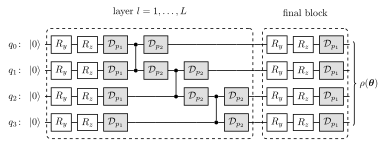
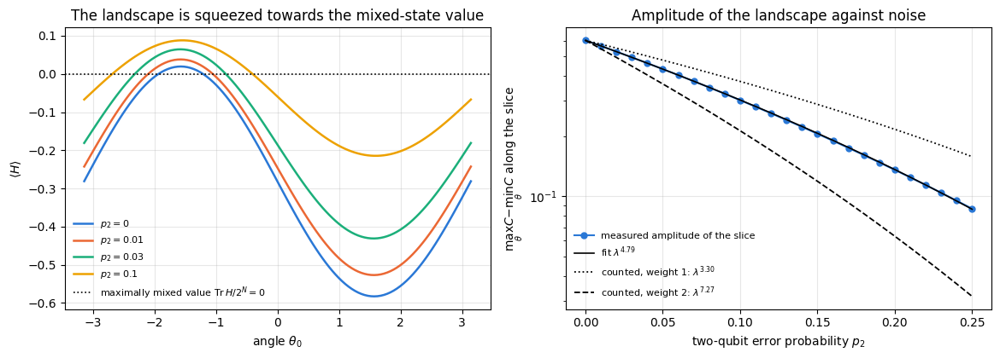
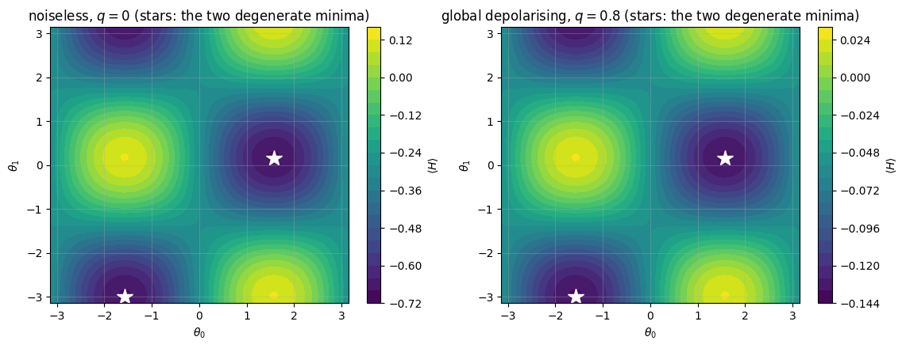
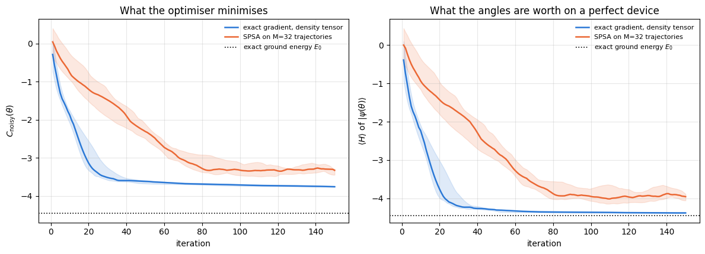
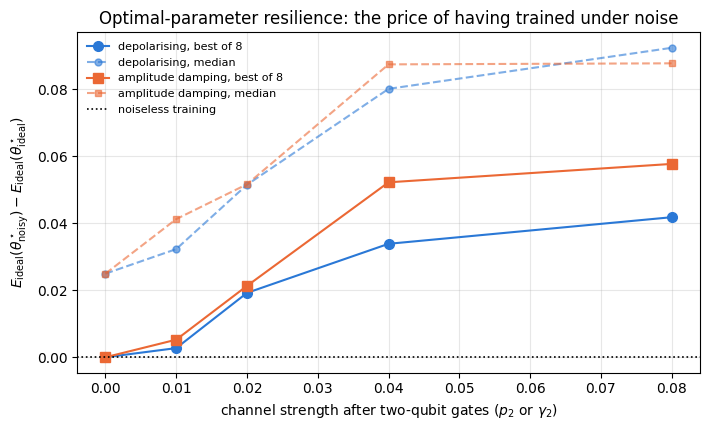
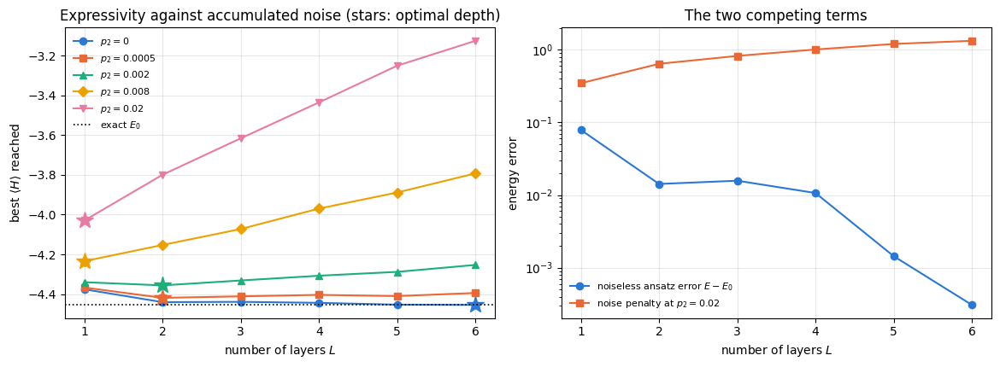

Every variational quantum algorithm written so far in this chapter assumed a perfect device. The circuit \(U(\boldsymbol\theta)\) was a product of exact unitaries, the state stayed pure, and the cost \(C(\boldsymbol\theta)=\langle\psi(\boldsymbol\theta)\vert\hat H\vert\psi(\boldsymbol\theta)\rangle\) was the energy of that pure state. Present-day hardware is not like that. A two-qubit gate on a superconducting processor fails a few times in a thousand (Barends et al. 2014; Sung et al. 2021); qubits dephase while they wait; excited states decay. The circuit that runs is not \(U(\boldsymbol\theta)\) but a quantum channel\(\mathcal E_{\boldsymbol\theta}\), and the state it produces is mixed.
This changes the optimisation problem itself as well as the accuracy of its answer. Three questions must be answered before a variational algorithm can be trusted on a noisy device.
What does noise do to the landscape? If it only rescales the cost, the minimum is where it always was and the algorithm still finds the right state. If it deforms the cost, the algorithm optimises the wrong function.
What does noise do to the gradients? A landscape that flattens exponentially with circuit depth needs a number of measurements that grows exponentially with the depth before its gradients can be resolved, and a different optimiser does not change that.
Can the damage be undone afterwards? Error correction needs many more qubits than exist today; error mitigation trades extra circuit runs for a better estimate of the noiseless expectation value, and works now.
Road map.
Section 3 fixes the noise model — a channel after every rotation pair and on both qubits of every two-qubit gate — and derives the dictionary between the numbers a laboratory reports (average gate fidelity, \(T_1\), \(T_2\)) and the channel parameters our simulator takes.
Section 4 builds the two simulators. The density tensor propagates \(\rho\) exactly at cost \(O(4^N)\); the quantum trajectory unravelling keeps a pure state at cost \(O(2^N)\) per sample and converges as \(1/\sqrt M\). They are checked against each other on the energy of a noisy variational state.
Section 5 derives how a Pauli expectation value contracts under local depolarising noise — a factor \((1-4p/3)\) per noisy qubit per layer — and measures the law where its assumptions hold exactly.
Section 6 proves that a global depolarising channel commutes with every unitary, so that \(C_{\rm noisy}(\boldsymbol\theta)=(1-q)\,C(\boldsymbol\theta)+q\,\mathrm{Tr}\,\hat H/2^N\) and the minimiser is unchanged. Section 7 shows that local noise moves the minimiser: in closed form for one qubit under amplitude damping (non-unital) and under dephasing (unital), and for the four-qubit circuit under local depolarising, dephasing and damping noise through the gradient of the noisy cost at the noiseless optimum.
Section 8 measures noise-induced barren plateaus: the variance of a gradient component against circuit depth, with and without noise.
Sections 9 to 11 train under noise — exact gradients through the Kraus einsums against SPSA on trajectory estimates — test optimal-parameter resilience (train noisy, evaluate noiselessly) and measure the depth trade-off between expressivity and accumulated noise.
Section 12 implements zero-noise extrapolation, shows a regime where it removes most of the bias and one where it fails, and quantifies the price in measurement shots.
Section 13 measures the cost of both simulators against \(N\) and locates the crossover.
What you will learn
Physics
how gate errors, dephasing and energy relaxation are represented as quantum channels, and how the channel parameters are read off from \(T_1\), \(T_2\) and a randomised-benchmarking error rate;
why a global depolarising channel leaves the position of the variational minimum exactly where it was, while local channels, unital or not, shift it;
why the useful circuit depth has an optimum that moves to smaller depth as the error rate grows;
what error mitigation can and cannot do.
Numerical methods
two representations of the same open-system dynamics, one deterministic and \(O(4^N)\), one stochastic and \(O(2^N)\), and how to validate either against the other with error bars and a deliberately wrong control;
differentiating a channel: reverse-mode automatic differentiation straight through a chain of Kraus einsums;
estimating a decay exponent from data and comparing it with a derived prediction;
Richardson extrapolation of a noisy expectation value in the noise strength.
Implementation practice
lax.scan over circuit layers so that the compiled graph does not grow with depth;
vmap over noise strengths (the channel parameter is a traced number) and over random initialisations at the same time, so a whole two-dimensional sweep is one compiled program;
keeping the monitored quantity exact while the optimised quantity is noisy.
Conventions and sizes. The test problem throughout is the ground state of an XXZ chain in a transverse field on \(N=4\) qubits, with the hardware-efficient ansatz of notebook 40. Four qubits keep the density tensor at \(4^4=256\) complex numbers, so exact gradients through the channel are cheap and every experiment can be repeated over many random initialisations. The trajectory simulator is pushed to \(N=12\) in the cost study of Section 13.
Configuration
Every notebook of this course starts with the same cell. Choose where to run (DEVICE) and the floating-point precision (PRECISION): "double" = float64/complex128 (default, recommended for physics), "single" = float32/complex64 (half the memory, faster on consumer GPUs, but watch the round-off). All code below derives its dtypes from RDTYPE/CDTYPE and its check tolerances from TOL, so nothing else needs to change.
Code
# ==============================================================================# CONFIGURATION -- adapt to your hardware, then run the notebook top to bottom# ==============================================================================DEVICE ="auto"# "auto": use a GPU if JAX finds one, else CPU | "cpu" | "gpu"PRECISION ="double"# "double": float64/complex128 | "single": float32/complex64import osif DEVICE =="cpu": os.environ["JAX_PLATFORMS"] ="cpu"# must be set BEFORE jax is importedimport stringfrom functools import partialimport mathimport numpy as npimport jaximport jax.numpy as jnpfrom jax import lax# Precision is configurable: "double" = float64/complex128 (default; needed for long time evolutions and# tight validation), "single" = float32/complex64 (half the memory, faster on consumer GPUs).# In a notebook PRECISION is defined in the Configuration cell; for this module use the env var QE_PRECISION.PRECISION =globals().get("PRECISION", os.environ.get("QE_PRECISION", "double"))jax.config.update("jax_enable_x64", PRECISION =="double")RDTYPE = jnp.float64 if PRECISION =="double"else jnp.float32 # real dtypeCDTYPE = jnp.complex128 if PRECISION =="double"else jnp.complex64 # complex dtype of all states/operatorsTOL =1e-10if PRECISION =="double"else1e-4# tolerance for sanity checks (asserts)_LETTERS = string.ascii_letters # the 52 einsum index labels a-z, A-Zimport timeimport matplotlib.pyplot as pltif DEVICE =="gpu"and jax.default_backend() =="cpu":print("WARNING: DEVICE='gpu' requested but JAX found no GPU -- running on CPU.")print(f"JAX {jax.__version__} | backend: {jax.default_backend()} | devices: {jax.devices()}")print(f"precision: {PRECISION} -> real {RDTYPE.__name__}, complex {CDTYPE.__name__}, check tolerance TOL={TOL:g}")
JAX 0.11.0 | backend: cpu | devices: [CpuDevice(id=0)]
precision: double -> real float64, complex complex128, check tolerance TOL=1e-10
2. Engine recap and notebook helpers
From the engine we need the two ways of acting on a density tensor (apply_gate_dm, apply_kraus_dm), the stochastic unravelling (apply_kraus_mcwf), the three channels of the noise model, the ansatz and its parameter count, the Hamiltonian term list and the exact ground state from Lanczos.
Engine recap — the simulator primitives used in this notebook (click to expand)
# ==============================================================================# ENGINE RECAP: the functions of quantum_engine.py (SmoQ.jax) used in this notebook.# Each one is derived, with its mathematics and an independent check, in notebook 08b# (Chapter 3), 'Building the quantum simulator engine'.# States are rank-N tensors of shape (2,)*N; every operator acts through ONE einsum.# ==============================================================================# ----------------------------------------------------------------------------# 1. Elementary matrices: Paulis, Clifford generators, rotations# ----------------------------------------------------------------------------I2 = jnp.eye(2, dtype=CDTYPE)X = jnp.array([[0, 1], [1, 0]], dtype=CDTYPE)Y = jnp.array([[0, -1j], [1j, 0]], dtype=CDTYPE)Z = jnp.array([[1, 0], [0, -1]], dtype=CDTYPE)H = jnp.array([[1, 1], [1, -1]], dtype=CDTYPE) / jnp.sqrt(2.0) # Hadamard: Z-basis <-> X-basisP0 = jnp.array([[1, 0], [0, 0]], dtype=CDTYPE) # projector |0><0|P1 = jnp.array([[0, 0], [0, 1]], dtype=CDTYPE) # projector |1><1|PAULI = {"I": I2, "X": X, "Y": Y, "Z": Z}CZ = jnp.diag(jnp.array([1, 1, 1, -1], dtype=CDTYPE))XX = jnp.kron(X, X)YY = jnp.kron(Y, Y)ZZ = jnp.kron(Z, Z)def ry(theta):"""Rotation about y: Ry(theta) = exp(-i theta Y/2) = [[cos, -sin], [sin, cos]](theta/2) (real matrix).""" c, s = jnp.cos(theta /2), jnp.sin(theta /2)return jnp.array([[c, -s], [s, c]], dtype=CDTYPE)def rz(theta):"""Rotation about z: Rz(theta) = exp(-i theta Z/2) = diag(e^{-i theta/2}, e^{+i theta/2}).""" e = jnp.exp(-0.5j* theta)return jnp.array([[e, 0], [0, jnp.conj(e)]], dtype=CDTYPE)# ----------------------------------------------------------------------------# 2. THE core primitive: a k-qubit operator acting on a tensor through ONE einsum# ----------------------------------------------------------------------------def apply_gate(psi, U, qubits):"""Apply a k-qubit operator U to the axes `qubits` of the tensor `psi`. MATH ---- One qubit (k=1), target q: psi'[s_0,..,a,..,s_{N-1}] = sum_b U[a,b] psi[s_0,..,b,..,s_{N-1}] Two qubits (k=2), targets (q1,q2); the 4x4 matrix is reshaped to U[a1,a2,b1,b2]: psi'[.., a1, .., a2, ..] = sum_{b1,b2} U[a1,a2,b1,b2] psi[.., b1, .., b2, ..] This IS the action of (1 x .. x U x .. x 1) -- written without ever building it. EINSUM TRANSLATION (generated automatically below) ------------------ N=3, q=1 : "db,abc->adc" d = new (output) index of qubit 1 N=4, q=(1,3) : "efbd,abcd->aecf" e,f = new indices of qubits 1 and 3 Recipe: label the axes of psi with letters a,b,c,...; give every target qubit a NEW letter (the next unused ones); U carries (new letters)+(old letters of the targets); the output is psi's labels with the target letters replaced by the new ones. IMPLEMENTATION NOTES -------------------- * reshape of U: (2^k,2^k) -> (2,)*2k. Row index = (a1..ak), column = (b1..bk), and the FIRST qubit in `qubits` is the most significant bit of the small matrix, i.e. it corresponds to the LEFT factor of kron(A,B). * `qubits` may be any distinct axes in any order: non-neighbouring gates cost the same. * U need not be unitary: projectors, Kraus operators and Hamiltonian terms reuse this. * psi may be ANY tensor with those axes of size 2: a state (rank N), a density tensor (rank 2N: ket axes 0..N-1, bra axes N..2N-1), ... COST O(2^k * 2^N) operations, O(2^N) memory (dense matrix: O(4^N) both). JAX `qubits` must be static Python ints (they define the einsum string); psi and U are traced, so the function can sit inside jit / grad / vmap / scan. """ qubits =tuple(int(q) for q in qubits) k, n =len(qubits), psi.ndim U = jnp.asarray(U, dtype=psi.dtype).reshape((2,) * (2* k)) # matrix -> rank-2k tensor inp =list(_LETTERS[:n]) # labels of psi's axes new = _LETTERS[n:n + k] # fresh labels for the outputs out = inp.copy()for a, q inzip(new, qubits): out[q] = a # target axes get the new labels sub =f"{''.join(new)}{''.join(inp[q] for q in qubits)},{''.join(inp)}->{''.join(out)}"return jnp.einsum(sub, U, psi)def apply_gate_dm(rho, U, qubits):"""Unitary on a density tensor: rho -> U rho U^dagger. MATH rho'[a..;a'..] = sum_{b,b'} U[a,b] rho[b..;b'..] U^*[a',b'] i.e. U acts on the KET axis q and the complex conjugate U^* on the BRA axis N+q. (A density matrix is "a state vector of 2N qubits": vectorisation |rho>> and U (x) U^* acting on it.) IMPLEMENTATION two calls of `apply_gate` -- the same einsum machinery, no new code. COST O(2^k 4^N). """ N = rho.ndim //2 rho = apply_gate(rho, U, qubits) # U on ket axesreturn apply_gate(rho, jnp.conj(jnp.asarray(U)), [N + q for q in qubits]) # U^* on bra axesdef apply_kraus_dm(rho, kraus, qubits):"""Quantum channel in Kraus form: rho -> sum_m K_m rho K_m^dagger, sum_m K_m^dag K_m = 1. EINSUM TRANSLATION (N=2, channel on qubit 0; g = Kraus index, summed!) "gea,gfc,abcd->ebfd" with operands K, K^*, rho [a=ket0, b=ket1, c=bra0, d=bra1; e, f = new ket0, bra0] All Kraus branches are summed INSIDE one einsum -- no Python loop over m. `kraus` has shape (M, 2^k, 2^k). """ qubits =tuple(int(q) for q in qubits) k, N =len(qubits), rho.ndim //2 K = jnp.asarray(kraus, dtype=rho.dtype).reshape((-1,) + (2,) * (2* k)) n = rho.ndim inp =list(_LETTERS[:n]) new_k, new_b, m = _LETTERS[n:n + k], _LETTERS[n + k:n +2* k], _LETTERS[n +2* k] out = inp.copy()for a, b, q inzip(new_k, new_b, qubits): out[q], out[N + q] = a, b ket_old ="".join(inp[q] for q in qubits) bra_old ="".join(inp[N + q] for q in qubits) sub =f"{m}{new_k}{ket_old},{m}{new_b}{bra_old},{''.join(inp)}->{''.join(out)}"return jnp.einsum(sub, K, jnp.conj(K), rho)# ----------------------------------------------------------------------------# 3. State preparation# ----------------------------------------------------------------------------def zero_state(N):"""|00...0>: a rank-N tensor of zeros with a single 1 at index (0,0,...,0). JAX arrays are immutable: `.at[idx].set(v)` returns an updated COPY (functional style)."""return jnp.zeros((2,) * N, dtype=CDTYPE).at[(0,) * N].set(1.0)_KETS = {"0": [1, 0], "1": [0, 1], "+": [1, 1], "-": [1, -1], "r": [1, 1j], "l": [1, -1j]}def product_state(spec):"""Product state from a string, one character per qubit: product_state('01+-') = |0>|1>|+>|->. ('r','l' = the +1/-1 eigenstates of Y.) MATH psi[s_0,...,s_{N-1}] = v0[s_0] v1[s_1] ... v_{N-1}[s_{N-1}] EINSUM an outer product = einsum with NO summed index: "a,b,c->abc". A product state needs only 2N numbers; entanglement is what makes all 2^N necessary. """ vecs = [jnp.array(_KETS[c], dtype=CDTYPE) / jnp.linalg.norm(jnp.array(_KETS[c], dtype=CDTYPE))for c in spec] n =len(vecs) sub =",".join(_LETTERS[i] for i inrange(n)) +"->"+ _LETTERS[:n]return jnp.einsum(sub, *vecs)def haar_state(key, N):"""Haar-random pure state: a complex Gaussian vector, normalised. (The Gaussian measure is unitarily invariant, so the direction is uniformly distributed.) `key` is an explicit JAX PRNG key -- same key, same state: reproducible science.""" k1, k2 = jax.random.split(key) v = jax.random.normal(k1, (2,) * N) +1j* jax.random.normal(k2, (2,) * N)return (v / jnp.linalg.norm(v)).astype(CDTYPE)def to_dm(psi):"""Pure state -> density TENSOR rho[s..; s'..] = psi[s..] psi^*[s'..] (rank 2N). An outer product: einsum "ab,AB->abAB" -- here via the equivalent tensordot(axes=0)."""return jnp.tensordot(psi, jnp.conj(psi), axes=0)def dm_matrix(rho):"""View a rank-2N density tensor as an ordinary 2^N x 2^N matrix (a reshape, no copy of meaning).""" d =int(round(np.sqrt(rho.size)))return rho.reshape(d, d)# ----------------------------------------------------------------------------# 4. Reduced density matrices & observables (matrix-free)# ----------------------------------------------------------------------------def rdm(psi, keep):"""Reduced density matrix of the qubits `keep` from a PURE state: rho_A = Tr_B |psi><psi|. MATH rho_A[a, a'] = sum_{b} psi[a, b] psi^*[a', b] (a: indices of A, b: of the rest B) EINSUM TRANSLATION N=3, keep=(0,): "abc,Abc->aA" with operands psi, psi^* * letters of B (b,c) appear in BOTH operands and not in the output -> summed = traced out * the kept axis gets a different letter in the second operand -> stays open (a and A) The full |psi><psi| (4^N numbers) is never formed; cost O(2^N 2^|A|). Returns a (2^|A|, 2^|A|) matrix with row/column order following `keep`. """ keep =tuple(int(q) for q in keep) n, k = psi.ndim, len(keep) a =list(_LETTERS[:n]) b = a.copy()for new, q inzip(_LETTERS[n:n + k], keep): b[q] = new sub =f"{''.join(a)},{''.join(b)}->{''.join(a[q] for q in keep)}{''.join(b[q] for q in keep)}"return jnp.einsum(sub, psi, jnp.conj(psi)).reshape(2** k, 2** k)def rdm_dm(rho, keep):"""Partial trace of a density TENSOR (rank 2N), keeping the qubits `keep`. MATH rho_A[a,a'] = sum_b rho[a,b ; a',b] EINSUM N=2, keep=(0,): "abAb->aA" -- the letter b is REPEATED inside one operand and absent from the output: that is a trace over that pair of axes. """ keep =tuple(int(q) for q in keep) N = rho.ndim //2 ket =list(_LETTERS[:N]) bra = [(_LETTERS[N + q] if q in keep else ket[q]) for q inrange(N)] sub =f"{''.join(ket)}{''.join(bra)}->{''.join(ket[q] for q in keep)}{''.join(bra[q] for q in keep)}"return jnp.einsum(sub, rho).reshape(2**len(keep), 2**len(keep))def expect_local(psi, O, qubits):"""<psi| O_qubits |psi> for a k-local operator O (2^k x 2^k matrix). MATH <O> = Tr(rho_A O) with A = `qubits`: a local observable only sees the local state. Cost O(2^N) for the RDM + O(4^k) for the small trace. One RDM serves ALL observables on A (e.g. <X>,<Y>,<Z> from a single 2x2 matrix). """return jnp.real(jnp.trace(rdm(psi, qubits) @ jnp.asarray(O, dtype=CDTYPE)))def expect_local_dm(rho, O, qubits):"""Tr(rho O_qubits) for a density tensor, via its reduced density matrix."""return jnp.real(jnp.trace(rdm_dm(rho, qubits) @ jnp.asarray(O, dtype=CDTYPE)))def apply_pauli_string(psi, ops):"""Apply a Pauli string P = P_0 x P_1 x ... to psi. `ops` is a dict {qubit: 'X'|'Y'|'Z'} or a string like 'XIZY' (one letter per qubit; 'I' skipped). N single-qubit einsums -- cost O(N 2^N) -- instead of one 2^N x 2^N matrix."""ifisinstance(ops, str): ops = {q: p for q, p inenumerate(ops) if p !="I"}for q, p in ops.items(): psi = apply_gate(psi, PAULI[p], [q])return psidef expect_pauli_string(psi, ops):"""<psi|P|psi> = <psi | (P psi)> : apply the string, then ONE inner product (jnp.vdot conjugates its first argument). Works for strings of any weight, e.g. the N-body correlator <X X ... X>."""return jnp.real(jnp.vdot(psi, apply_pauli_string(psi, ops)))def expect_pauli_string_dm(rho, ops):"""Tr(P rho): apply P to the KET axes only, then take the full trace."""return jnp.real(jnp.trace(dm_matrix(apply_pauli_string(rho, ops))))# ----------------------------------------------------------------------------# 5. State characteristics: entropies, fidelity, negativity# ----------------------------------------------------------------------------def fidelity_pure(psi, phi):"""F = |<psi|phi>|^2 between two pure states."""return jnp.abs(jnp.vdot(psi, phi)) **2# ----------------------------------------------------------------------------# 7. Noise channels (Kraus operators): density matrix and quantum-trajectory forms# ----------------------------------------------------------------------------def kraus_depolarizing(p):"""Depolarising channel rho -> (1-p) rho + (p/3)(X rho X + Y rho Y + Z rho Z). Kraus: sqrt(1-p) 1, sqrt(p/3) X, sqrt(p/3) Y, sqrt(p/3) Z. Bloch vector shrinks by 1 - 4p/3."""return jnp.stack([jnp.sqrt(1- p) * I2, jnp.sqrt(p /3) * X, jnp.sqrt(p /3) * Y, jnp.sqrt(p /3) * Z])def kraus_dephasing(p):"""Dephasing (phase-flip) channel rho -> (1-p) rho + p Z rho Z : coherences rho_01 -> (1-2p) rho_01."""return jnp.stack([jnp.sqrt(1- p) * I2, jnp.sqrt(p) * Z])def kraus_amplitude_damping(g):"""Amplitude damping (T1 decay |1> -> |0> with probability g): K0 = [[1,0],[0,sqrt(1-g)]] (no decay -- but the amplitude of |1> shrinks: 'no click' is information) K1 = [[0,sqrt(g)],[0,0]] (decay event = sqrt(g) |0><1| = sqrt(g) sigma^+, engine SP).""" K0 = jnp.array([[1, 0], [0, jnp.sqrt(1- g)]], dtype=CDTYPE) K1 = jnp.array([[0, jnp.sqrt(g)], [0, 0]], dtype=CDTYPE)return jnp.stack([K0, K1])def apply_kraus_mcwf(key, psi, kraus, qubits):"""Apply a channel to a PURE state stochastically (quantum trajectory / Monte-Carlo wave function). MATH choose branch m with probability p_m = ||K_m psi||^2 = Tr(K_m rho_A K_m^dag) then |psi> -> K_m|psi> / sqrt(p_m). Averaging |psi><psi| over many trajectories gives exactly sum_m K_m rho K_m^dag. WHY memory O(2^N) instead of O(4^N): open systems at the price of closed ones (times #trajectories, which are embarrassingly parallel -> jax.vmap over keys). IMPLEMENTATION probabilities come from the SMALL reduced density matrix (einsum "mab,bc,mac->m"); `K[m]` with a traced integer m is a gather, so everything stays jit-compatible. """ K = jnp.asarray(kraus, dtype=CDTYPE) r = rdm(psi, qubits) probs = jnp.real(jnp.einsum("mab,bc,mac->m", K, r, jnp.conj(K))) m = jax.random.categorical(key, jnp.log(jnp.clip(probs, 1e-300, None))) psi = apply_gate(psi, K[m], qubits)return psi / jnp.linalg.norm(psi)# ----------------------------------------------------------------------------# 8. Hamiltonians as lists of local terms; H|psi> matrix-free# ----------------------------------------------------------------------------def heisenberg_terms(N, Jxx=1.0, Jyy=1.0, Jzz=1.0, hx=0.0, hy=0.0, hz=0.0, periodic=False, bonds=None):"""Spin-1/2 Hamiltonian in Pauli convention H = sum_<ij> (Jxx X_i X_j + Jyy Y_i Y_j + Jzz Z_i Z_j) + sum_i (hx X_i + hy Y_i + hz Z_i) returned as a LIST of local terms [(qubits, small_matrix), ...] -- this list *is* our Hamiltonian. Heisenberg: Jxx=Jyy=Jzz XXZ: Jxx=Jyy!=Jzz XY: Jzz=0 TFIM: only Jzz and hx. `bonds` overrides the default open chain (any graph: ladders, 2D lattices, all-to-all, ...)."""if bonds isNone: bonds = [(i, i +1) for i inrange(N -1)] + ([(N -1, 0)] if periodic and N >2else []) terms = [((i, j), Jxx * XX + Jyy * YY + Jzz * ZZ) for (i, j) in bonds]if hx !=0or hy !=0or hz !=0: terms += [((i,), hx * X + hy * Y + hz * Z) for i inrange(N)]return termsdef apply_hamiltonian(terms, psi):"""H|psi> = sum_k h_k|psi>, every term applied with `apply_gate` (h_k is Hermitian, not unitary -- the einsum does not care). Cost O(#terms * 2^N). This matrix-vector product is ALL that Lanczos, Chebyshev and Krylov methods need, which is why they scale to N ~ 25-30.""" out = jnp.zeros_like(psi)for qubits, h in terms: out = out + apply_gate(psi, h, qubits)return outdef energy(terms, psi):"""<psi|H|psi> = Re <psi | (H psi)>."""return jnp.real(jnp.vdot(psi, apply_hamiltonian(terms, psi)))def dense_hamiltonian(terms, N):"""Dense 2^N x 2^N matrix for VALIDATION on small N -- built from the matrix-free action: column j of H is H|e_j>. `jax.vmap` applies H to all basis vectors at once.""" eye = jnp.eye(2** N, dtype=CDTYPE).reshape((2** N,) + (2,) * N) cols = jax.vmap(lambda e: apply_hamiltonian(terms, e).reshape(-1))(eye)return cols.T# ----------------------------------------------------------------------------# 9. Time evolution: TEBD / Trotter-Suzuki, Chebyshev, Krylov, exact# ----------------------------------------------------------------------------def lanczos(matvec, v0, m=60, reorth=True):"""m-step Lanczos iteration: orthonormal basis V of the Krylov space span{v, Hv, H^2 v, ...} in which H is TRIDIAGONAL: T = V^dag H V = tridiag(beta, alpha, beta). Recurrence w = H v_j - alpha_j v_j - beta_{j-1} v_{j-1}, alpha_j = <v_j|H|v_j>, beta_j = ||w||. `reorth=True` re-orthogonalises against all previous vectors (cures the loss of orthogonality of floating-point Lanczos at the price of O(m^2) inner products). Only `matvec` (H|psi>) is needed -> matrix-free. Returns (alphas, betas, V[m, 2,..,2]). """ v = v0 / jnp.linalg.norm(v0) V, alphas, betas = [v], [], [] w = matvec(v)for j inrange(m): a = jnp.real(jnp.vdot(V[j], w)) alphas.append(a) w = w - a * V[j] - (betas[-1] * V[j -1] if j >0else0.0)if reorth:for u in V: w = w - jnp.vdot(u, w) * u b = jnp.linalg.norm(w)if j == m -1orfloat(b) <1e-12:break betas.append(b) V.append(w / b) w = matvec(V[-1])return np.array(alphas, dtype=float), np.array(betas, dtype=float), jnp.stack(V)def lanczos_ground_state(terms, N, m=80, key=None, restarts=3):"""Ground state (E_0, |psi_0>) from restarted Lanczos: diagonalise the small T, map its lowest eigenvector back with V, use it as the next start vector. Extremal eigenvalues converge first.""" key = jax.random.PRNGKey(0) if key isNoneelse key v = haar_state(key, N) mv = jax.jit(lambda p: apply_hamiltonian(terms, p)) E =Nonefor _ inrange(restarts): a, b, V = lanczos(mv, v, m) w, S_ = np.linalg.eigh(np.diag(a) + np.diag(b, 1) + np.diag(b, -1)) v = jnp.tensordot(jnp.asarray(S_[:, 0], dtype=CDTYPE), V, axes=1) v = v / jnp.linalg.norm(v) E = w[0]returnfloat(E), v# ----------------------------------------------------------------------------# 12. Random unitaries, Clifford group, brick-wall circuits# ----------------------------------------------------------------------------def haar_unitary(key, d):"""Haar-random d x d unitary (Mezzadri's recipe): QR-decompose a complex Ginibre matrix and fix the phases of R's diagonal -- without the phase fix the distribution is NOT Haar.""" k1, k2 = jax.random.split(key) G = (jax.random.normal(k1, (d, d)) +1j* jax.random.normal(k2, (d, d))) / jnp.sqrt(2.0) Q, R = jnp.linalg.qr(G) ph = jnp.diagonal(R) / jnp.abs(jnp.diagonal(R))return Q * ph[None, :]# ----------------------------------------------------------------------------# 15. Variational circuits: ansatz, gradients, optimizers# ----------------------------------------------------------------------------def hea_num_params(N, layers):"""Number of angles of `hardware_efficient_ansatz`: (layers+1) rotation blocks x N qubits x 2 angles."""return2* N * (layers +1)def hardware_efficient_ansatz(theta, N, layers, entangler=CZ, periodic=False):"""Hardware-efficient ansatz |psi(theta)> = R(theta_L) * prod_{l<L} [ ENT * R(theta_l) ] |0...0>, R = prod_q Rz(.) Ry(.), ENT = a chain of CZ (or any 2-qubit gate). `theta` is a flat vector of length 2N(L+1). The function is a pure map theta -> state, hence jit-able and differentiable end to end.""" theta = theta.reshape(layers +1, N, 2) psi = zero_state(N)for l inrange(layers +1):for q inrange(N): psi = apply_gate(psi, ry(theta[l, q, 0]), [q]) psi = apply_gate(psi, rz(theta[l, q, 1]), [q])if l < layers:for q inrange(N -1): psi = apply_gate(psi, entangler, [q, q +1])if periodic and N >2: psi = apply_gate(psi, entangler, [N -1, 0])return psi
Code
# ==============================================================================# PLOT STYLE + helpers reused from notebook 41 (training loop, statistics)# ==============================================================================PALETTE = ["#2a78d6", "#eb6834", "#1baf7a", "#eda100", "#e87ba4", "#4a3aa7"] # colour-blind-friendly, fixed orderMARKERS = ["o", "s", "^", "D", "v", "P"]plt.rcParams.update({"axes.prop_cycle": plt.cycler(color=PALETTE), "axes.grid": True,"grid.alpha": 0.3, "font.size": 10, "legend.frameon": False})def max_abs(a):"""Largest absolute entry of an array, as a Python float."""returnfloat(jnp.max(jnp.abs(jnp.asarray(a))))def bands(hist):"""Median and interquartile band of a batch of histories, shape (n_runs, n_steps) -> three curves.""" h = np.asarray(hist)return np.percentile(h, 25, axis=0), np.median(h, axis=0), np.percentile(h, 75, axis=0)def mean_and_se(x):"""Sample mean and standard error of the mean of a 1D array of independent samples.""" x = np.asarray(x)returnfloat(np.mean(x)), float(np.std(x, ddof=1) / np.sqrt(x.size))def opt_adam(lr, b1=0.9, b2=0.999, eps=1e-8):"""Adam as a pair (init, update) of pure functions -- the optimiser interface of notebook 41."""def init(theta):return (jnp.zeros_like(theta), jnp.zeros_like(theta))def update(theta, state, g, k): m, v = state m = b1 * m + (1- b1) * g v = b2 * v + (1- b2) * g **2return theta - lr * (m / (1- b1 ** k)) / (jnp.sqrt(v / (1- b2 ** k)) + eps), (m, v)return init, updatedef train(theta0, key, grad_rule, opt, monitor, n_steps):"""One training run compiled as a single `lax.scan` (notebook 41, Step 8). grad_rule(theta, key, k) -> gradient estimate; opt = (init, update); monitor(theta) -> recorded diagnostic. """ init_fn, update_fn = optdef body(carry, k): theta, state, key = carry key, sub = jax.random.split(key) theta, state = update_fn(theta, state, grad_rule(theta, sub, k), k)return (theta, state, key), monitor(theta) (theta, _, _), hist = lax.scan(body, (theta0, init_fn(theta0), key), jnp.arange(1, n_steps +1))return theta, histdef random_starts(n_runs, n_params, seed, scale=jnp.pi):"""`n_runs` independent parameter vectors drawn uniformly from [-scale, scale]^n, plus one PRNG key each.""" k1, k2 = jax.random.split(jax.random.PRNGKey(seed))return (jax.random.uniform(k1, (n_runs, n_params), minval=-scale, maxval=scale), jax.random.split(k2, n_runs))def timed(fn, *args, repeat=3):"""Best of `repeat` wall-clock timings AFTER one warm-up call, so compilation is excluded.""" jax.block_until_ready(fn(*args)) ts = []for _ inrange(repeat): t0 = time.perf_counter() jax.block_until_ready(fn(*args)) ts.append(time.perf_counter() - t0)returnmin(ts)def compile_then_run(fn, *args):"""Compile `jax.jit(fn)` for these argument shapes ahead of time, then run it once; time both phases separately. JAX `jit(fn).lower(*args).compile()` traces and compiles without executing, so the second phase is pure run time. Returns (output, compile seconds, run seconds). """ t0 = time.perf_counter() compiled = jax.jit(fn).lower(*args).compile() t1 = time.perf_counter() out = jax.block_until_ready(compiled(*args))return out, t1 - t0, time.perf_counter() - t1
3. The noise model and its parameters
3.1 A channel after every gate
The standard phenomenological model of a gate-based device is: after a gate, every qubit the gate touched passes through a single-qubit channel. In this notebook the two rotations \(R_y R_z\) on a qubit are treated as one single-qubit gate followed by one channel, and both qubits of every two-qubit gate receive a channel. The channel is the vehicle for two physically distinct effects.
Gate errors — miscalibrated pulses, crosstalk, leakage — are modelled by a depolarising channel, because a randomised gate error looks isotropic on the Bloch sphere once averaged over the randomising circuits used to measure it. Two-qubit gates have larger errors than single-qubit gates: the experiments quoted in Section 3.2 report single-qubit errors per gate \(2.4\) to \(7\) times below their two-qubit values. The model therefore carries two error probabilities, \(p_1\) and \(p_2>p_1\). It sets \(p_1=0.1\,p_2\), which by Eqs. (4) and (4b) makes the two-qubit error per gate about \(24\) times the single-qubit one, so single-qubit noise is a small correction throughout.
Idling — the qubit waiting while other gates are executed — is modelled by dephasing (loss of the relative phase, time constant \(T_2\)) and amplitude damping (decay \(\vert1\rangle\to\vert0\rangle\), time constant \(T_1\)).
The three channels, with the Kraus operators the engine uses, are
3.2 Depolarising strength from an average gate fidelity
A laboratory does not publish \(p\); it publishes an error per gate\(r\) measured by randomised benchmarking, which is \(1-F_{\rm avg}\) with \(F_{\rm avg}\) the gate fidelity averaged over input states. The dictionary follows from one algebraic identity. For a single qubit,
which is checked by writing \(\rho=\tfrac12(\mathbb 1+\mathbf r\cdot\boldsymbol\sigma)\) and using \(\sigma_a\sigma_b\sigma_a=-\sigma_b\) for \(a\neq b\) and \(\sigma_a\sigma_a\sigma_a=\sigma_a\): the three conjugations flip the sign of two of the three Bloch components each, so \(\sum_a\sigma_a\rho\,\sigma_a=\tfrac12(3\cdot\mathbb 1-\mathbf r\cdot\boldsymbol\sigma)\), and adding \(\rho\) gives \(2\cdot\mathbb 1\). Substituting Eq. (2) into the first line of Eq. (1),
So the depolarising channel shrinks the Bloch vector by \(\lambda\equiv1-4p/3\) and mixes in a fraction \(4p/3\) of the maximally mixed state. The fidelity of the output with the (pure) input is \(\langle\psi\vert\mathcal D_p(\vert\psi\rangle\langle\psi\vert)\vert\psi\rangle=\lambda+\tfrac{4p}{3}\cdot\tfrac12 =1-\tfrac{2p}{3}\), independently of \(\vert\psi\rangle\). Hence
A two-qubit gate needs one more step, because its error per gate is averaged over two-qubit inputs. The average fidelity in dimension \(d\) is fixed by the process (entanglement) fidelity \(F_e=\sum_m\lvert\mathrm{Tr}K_m\rvert^2/d^2\) through \(F_{\rm avg}=(dF_e+1)/(d+1)\) (Horodecki, Horodecki and Horodecki 1999; Nielsen 2002), so that
For one qubit \(F_e=1-p\) and this is Eq. (4) again. The two-qubit depolarising channel \(\rho\to(1-p)\rho+\tfrac{p}{15}\sum_{P\neq\mathbb 1}P\rho P\), with the sum over the fifteen non-identity two-qubit Pauli strings, has process infidelity \(1-F_e=p\) and \(r=\tfrac45p\); written as \((1-\lambda)\rho+\lambda\,\mathbb 1/4\) with the fully mixed fraction \(\lambda=\tfrac{16}{15}p\), it has \(r=\tfrac34\lambda=\lambda(d-1)/d\). Our model instead applies \(\mathcal D_{p_2}\) to both qubits of the gate, so \(F_e=(1-p_2)^2\) and, with \(d=4\),
Adding the two one-qubit errors, \(2\times\tfrac23p_2\), would undercount \(r_2\) by a sixth, and converting a measured \(r_2\) with the one-qubit rule \(p_2=\tfrac32r_2\) would give a model with \(\tfrac85\cdot\tfrac32=2.4\) times the measured error. Every two-qubit noise level in this notebook is the channel parameter \(p_2\), and Eq. (4b) gives its error per gate: the default \(p_2=0.02\) has \(r_2=3.2\cdot10^{-2}\). Randomised benchmarking of \(CZ\) gates on superconducting qubits gave \(r_2=5.6\cdot10^{-3}\) for the best qubit pair of Barends et al. (2014) and \(r_2=2.4\cdot10^{-3}\) in Sung et al. (2021), with single-qubit errors per gate of \(8\cdot10^{-4}\) and \(0.6\)–\(1.0\cdot10^{-3}\) on the same devices. By Eq. (4b) the two \(CZ\) values are \(p_2=3.5\cdot10^{-3}\) and \(1.5\cdot10^{-3}\); the default of this notebook is six to thirteen times larger, so that the effects of noise are large already at four qubits and two layers.
3.3 Dephasing and damping from \(T_1\) and \(T_2\)
Amplitude damping removes population from \(\vert1\rangle\): from Eq. (1), \(\rho_{11}\to(1-\gamma)\rho_{11}\). Comparing with the exponential law \(\rho_{11}(t)=e^{-t/T_1}\rho_{11}(0)\) for an idling time \(t\),
\[\gamma=1-e^{-t/T_1}.\tag{5}\]
Dephasing multiplies the coherence by \(1-2p\), because \(Z\rho Z\) flips the sign of \(\rho_{01}\): \(\rho_{01}\to(1-p)\rho_{01}-p\rho_{01}\). Comparing with \(\rho_{01}(t)=e^{-t/T_\varphi}\rho_{01}(0)\),
(The measured \(T_2\) combines pure dephasing with the dephasing that damping itself produces, \(1/T_2=1/T_\varphi+1/(2T_1)\); Eq. (6) uses the pure-dephasing part.) Damping multiplies the coherence by \(\sqrt{1-\gamma}=e^{-t/(2T_1)}\), so the two channels together give
Both laws are checked numerically below by applying the channels \(n\) times and comparing with the exponentials.
Code
# ==============================================================================# STEP 1: the noise-parameter dictionary, verified numerically# ==============================================================================# CHECK A: the depolarising channel contracts the Bloch vector by 1 - 4p/3 (Eq. 3)p_chk =0.07rho_1q =0.5* (I2 +0.6* X +0.4* Y -0.5* Z) # an arbitrary mixed qubitrho_out = apply_kraus_dm(rho_1q, kraus_depolarizing(p_chk), [0])bloch_in = jnp.array([jnp.real(jnp.trace(rho_1q @ P)) for P in (X, Y, Z)])bloch_out = jnp.array([jnp.real(jnp.trace(rho_out @ P)) for P in (X, Y, Z)])lam_chk =1-4* p_chk /3print(f"depolarising p = {p_chk}")print(f" Bloch vector in : {np.asarray(bloch_in)}")print(f" Bloch vector out : {np.asarray(bloch_out)}")print(f" measured shrink factor {float(bloch_out[0] / bloch_in[0]):.12f} vs 1-4p/3 = {lam_chk:.12f}")assert max_abs(bloch_out - lam_chk * bloch_in) < TOL# CHECK B: the average gate fidelity of Eq. (4). The six +-X, +-Y, +-Z eigenstates form a 2-design, so# averaging <psi|D_p(|psi><psi|)|psi> over them gives EXACTLY the Haar average.six = [product_state(c) for c in ("0", "1", "+", "-", "r", "l")]F_six = [float(jnp.real(jnp.vdot(psi, apply_kraus_dm(to_dm(psi), kraus_depolarizing(p_chk), [0]) @ psi)))for psi in six] # for N=1 the density TENSOR is already the 2x2 matrixF_avg =float(np.mean(F_six))print(f" average gate fidelity over the 6-state 2-design: {F_avg:.12f} vs 1-2p/3 = {1-2* p_chk /3:.12f}")print(f" error per gate r = {1- F_avg:.6f} -> p = 3r/2 = {1.5* (1- F_avg):.6f} (input was {p_chk})")assertabs(F_avg - (1-2* p_chk /3)) < TOL# CHECK B2: the two-qubit error per gate of the model (D_p on BOTH qubits), Haar-averaged over two-qubit inputs,# against r = (4/5)[1 - (1-p)^2] from the process fidelity, and against the naive sum of two one-qubit errors 4p/3p_pair =0.02K1_np = np.asarray(kraus_depolarizing(p_pair))K_pair = [np.kron(a, b) for a in K1_np for b in K1_np] # Kraus operators of D_p (x) D_prng_pair = np.random.default_rng(0)V = rng_pair.normal(size=(20000, 4)) +1j* rng_pair.normal(size=(20000, 4))V /= np.linalg.norm(V, axis=1, keepdims=True) # Haar-random two-qubit pure statesF_pair =sum(np.abs(np.einsum("ni,ij,nj->n", V.conj(), k, V)) **2for k in K_pair) # <psi|E(psi)|psi>r_mc, r_se =1- F_pair.mean(), F_pair.std() / np.sqrt(len(F_pair))r_formula =0.8* (1- (1- p_pair) **2)print(f"\ntwo-qubit gate, D_p on both qubits, p = {p_pair}: Haar average r = {r_mc:.5f} +- {r_se:.5f}")print(f" (4/5)[1-(1-p)^2] = {r_formula:.5f} first order 8p/5 = {1.6* p_pair:.5f} naive 2 x 2p/3 = {4* p_pair /3:.5f}")assertabs(r_mc - r_formula) <5* r_seF_e_pair =sum(abs(np.trace(k)) **2for k in K_pair) /16# process fidelity of the Kraus set, d = 4print(f" process fidelity sum|Tr K|^2/16 = {F_e_pair:.10f} (1-p)^2 = {(1- p_pair) **2:.10f}")assertabs(F_e_pair - (1- p_pair) **2) < TOL# Eq. (4b) inverted: measured two-qubit errors per gate (Barends 2014, Sung 2021) -> channel parameter p2 of the modelfor r2_meas in (5.6e-3, 2.4e-3): p2_meas =1- np.sqrt(1-1.25* r2_meas) r2_wrong =0.8* (1- (1-1.5* r2_meas) **2) # model error if p2 = 3 r2 / 2 were usedprint(f" r2 = {r2_meas:.1e} -> p2 = {p2_meas:.3e} (5 r2/8 = {0.625* r2_meas:.3e}); "f"one-qubit rule p2 = 3 r2/2 would give r2 = {r2_wrong:.3e} = {r2_wrong / r2_meas:.2f} x measured")assertabs(0.8* (1- (1- p2_meas) **2) - r2_meas) < TOL# CHECK C: T1 and T2 laws, Eqs. (5) and (6)T1, T2phi, dt, n_steps_T =20.0, 12.0, 0.5, 60gam_step =1- np.exp(-dt / T1)p_step =0.5* (1- np.exp(-dt / T2phi))rho_T = to_dm(product_state("+")) # |+> has both population and coherencepop, coh = [], []for n inrange(n_steps_T +1): m = dm_matrix(rho_T) pop.append(float(jnp.real(m[1, 1]))) coh.append(float(jnp.abs(m[0, 1]))) rho_T = apply_kraus_dm(rho_T, kraus_amplitude_damping(gam_step), [0]) rho_T = apply_kraus_dm(rho_T, kraus_dephasing(p_step), [0])t_axis = dt * np.arange(n_steps_T +1)pop_pred =0.5* np.exp(-t_axis / T1)T2_eff =1/ (1/ T2phi +1/ (2* T1)) # Eq. (6a)coh_pred =0.5* np.exp(-t_axis / T2_eff)err_pop = np.max(np.abs(np.array(pop) - pop_pred))err_coh = np.max(np.abs(np.array(coh) - coh_pred))print(f"\nT1 = {T1}, T_phi = {T2phi}, step dt = {dt} -> gamma = {gam_step:.6f}, p_dephase = {p_step:.6f}")print(f" population : max |measured - 0.5 exp(-t/T1)| = {err_pop:.2e}")print(f" coherence : max |measured - 0.5 exp(-t/T2)| = {err_coh:.2e} (T2 = {T2_eff:.4f} from Eq. 6a)")assert err_pop < TOL and err_coh < TOLfig, ax = plt.subplots(figsize=(6.6, 4.0))ax.semilogy(t_axis, pop, "o", ms=3.5, color=PALETTE[0], label=r"population $\rho_{11}$ (simulated)")ax.semilogy(t_axis, pop_pred, "-", lw=1.4, color=PALETTE[0], label=r"$\frac{1}{2} e^{-t/T_1}$")ax.semilogy(t_axis, coh, "s", ms=3.5, color=PALETTE[1], label=r"coherence $\vert\rho_{01}\vert$ (simulated)")ax.semilogy(t_axis, coh_pred, "-", lw=1.4, color=PALETTE[1], label=r"$\frac{1}{2} e^{-t/T_2}$, Eq. (6a)")ax.set_xlabel("idle time $t$ (arbitrary units)")ax.set_ylabel("population / coherence")ax.set_title("Repeated channels reproduce the exponential decay laws")ax.legend(fontsize=8)fig.tight_layout(); plt.show()
depolarising p = 0.07
Bloch vector in : [ 0.6 0.4 -0.5]
Bloch vector out : [ 0.544 0.36266667 -0.45333333]
measured shrink factor 0.906666666667 vs 1-4p/3 = 0.906666666667
average gate fidelity over the 6-state 2-design: 0.953333333333 vs 1-2p/3 = 0.953333333333
error per gate r = 0.046667 -> p = 3r/2 = 0.070000 (input was 0.07)
two-qubit gate, D_p on both qubits, p = 0.02: Haar average r = 0.03167 +- 0.00002
(4/5)[1-(1-p)^2] = 0.03168 first order 8p/5 = 0.03200 naive 2 x 2p/3 = 0.02667
process fidelity sum|Tr K|^2/16 = 0.9604000000 (1-p)^2 = 0.9604000000
r2 = 5.6e-03 -> p2 = 3.506e-03 (5 r2/8 = 3.500e-03); one-qubit rule p2 = 3 r2/2 would give r2 = 1.338e-02 = 2.39 x measured
r2 = 2.4e-03 -> p2 = 1.501e-03 (5 r2/8 = 1.500e-03); one-qubit rule p2 = 3 r2/2 would give r2 = 5.750e-03 = 2.40 x measured
The three identities of Section 3 hold to machine precision. The Bloch vector shrinks by exactly \(1-4p/3\); the average fidelity over the six eigenstates of \(X\), \(Y\) and \(Z\) (a 2-design: their average equals the average over all pure states for any quantity quadratic in the state, such as this fidelity) equals \(1-2p/3\) to twelve digits, so a reported error per gate \(r\) is converted to a channel parameter by \(p=\tfrac32 r\) for a single-qubit gate; and repeating the two idle channels \(n\) times reproduces \(e^{-t/T_1}\) for the population and \(e^{-t/T_2}\) of Eq. (6a) for the coherence with a maximum deviation at the level of round-off. The two-qubit formula \(r_2=\tfrac45[1-(1-p_2)^2]\) is confirmed by a Haar average over \(20\,000\) random two-qubit states within its standard error, and the printout shows how far it lies from the naive sum \(\tfrac43p_2\) of two one-qubit errors. The process fidelity of the Kraus set equals \((1-p_2)^2\) to round-off, and the inversion of Eq. (4b) turns the two measured \(CZ\) errors into \(p_2=3.5\cdot10^{-3}\) and \(1.5\cdot10^{-3}\).
In the figure the coherence falls faster than the population. That is a property of the chosen times. In general the coherence decays at the rate \(1/T_2=1/T_\varphi+1/(2T_1)\) and the population at \(1/T_1\), so the coherence is the faster of the two only when \(T_2<T_1\) (here \(T_2=9.2\) against \(T_1=20\)). Without pure dephasing \(T_2=2T_1\) and the coherence decays at half the rate of the population.
Physics insight. The depolarising channel is not a claim that gate errors really are isotropic. It is the average of an arbitrary error channel over the random single-qubit Cliffords used in randomised benchmarking — the same twirling operation that makes the benchmarking curve a single exponential. Modelling gate errors as depolarising is exactly as accurate as the number \(r\) that the twirl produces, and no more.
4. Two simulators for the same noisy circuit
4.1 The noisy hardware-efficient ansatz
The circuit is the ansatz of notebook 40: \(L\) repetitions of [a rotation block \(R_y(\theta)R_z(\theta)\) on every qubit, then a chain of \(CZ\) gates], followed by one final rotation block, so the parameter count is \(n=2N(L+1)\). The noisy version inserts the channels of Section 3.1: \(\mathcal D_{p_1}\) on each qubit after its rotation pair, and \(\mathcal D_{p_2}\) on both qubits of every \(CZ\). With \(L=2\) and \(N=4\) that makes \(12\) channels of strength \(p_1\) and \(12\) of strength \(p_2\).
Counting the noise locations will matter in Sections 5 and 8. Per layer, each qubit passes through
one channel of strength \(p_1\) (after its rotations), and
one channel of strength \(p_2\) per \(CZ\) that touches it — two for a bulk qubit of an open chain, one at each end.
For \(N=4\) the chain has three bonds, so qubits \(0\) and \(3\) collect one \(CZ\) channel per layer and qubits \(1\) and \(2\) collect two.

Figure 1. The noisy ansatz as noisy_hea_dm and noisy_hea_mcwf build it, for the \(N=4\) chain of this notebook. Grey boxes are depolarising channels: \(\mathcal D_{p_1}\) after the \(R_yR_z\) pair on each qubit, and \(\mathcal D_{p_2}\) on both qubits of each \(CZ\), applied right after that gate and before the next \(CZ\) of the chain. The dashed layer is repeated \(L\) times (\(L=2\) by default), and the final rotation block carries its own \(\mathcal D_{p_1}\) channels. Sections 7.2 and 10 put dephasing or amplitude damping in the same places instead.
4.2 Representation 1: the density tensor
\(\rho\) is a rank-\(2N\) array (notebook 07): \(N\) ket axes and \(N\) bra axes. A unitary acts as \(U\) on the ket axis and \(U^*\) on the bra axis (apply_gate_dm); a channel is the single einsum of apply_kraus_dm, which sums over the Kraus index internally. The result is exact: no sampling, no statistical error. The price is \(4^N\) complex numbers and \(O(2^k4^N)\) work per \(k\)-qubit operation.
The implementation writes the \(L\) repeated layers as a lax.scan over the rows of \(\boldsymbol\theta\). Without it the traced graph would contain one copy of every gate in the circuit, and the compilation time of the gradient would grow linearly with the depth — which matters in Section 8, where depths up to \(L=12\) are differentiated.
4.3 Representation 2: quantum trajectories
The unravelling of notebook 07 keeps a pure state and replaces each channel by a random choice of one Kraus operator, \(\vert\psi\rangle\to K_m\vert\psi\rangle/\lVert K_m\vert\psi\rangle\rVert\) with probability \(\lVert K_m\vert\psi\rangle\rVert^2\) (apply_kraus_mcwf). The average of \(\vert\psi\rangle\langle\psi\vert\) over trajectories is exactly \(\rho\), so any expectation value is estimated without bias:
Memory is \(O(2^N)\) per trajectory and trajectories are independent, so vmap over PRNG keys runs them all in one compiled program.
Code
# ==============================================================================# STEP 2: the noisy ansatz on a density tensor and as a quantum trajectory# ==============================================================================# PARAMETERS of the test problem: XXZ chain in a transverse fieldN_Q =4# qubitsJXX, JYY, JZZ, HX =-1.0, -1.0, -0.5, -0.3# H = Jxx sum XX + Jyy sum YY + Jzz sum ZZ + hx sum XP2_DEF =0.02# depolarising probability after a two-qubit gate (per touched qubit)P1_RATIO =0.1# p1 = P1_RATIO * p2 (a modelling choice, Section 3.1)L_DEF =2# layers of the default ansatzTERMS = heisenberg_terms(N_Q, Jxx=JXX, Jyy=JYY, Jzz=JZZ, hx=HX)E0_EXACT, PSI_GS = lanczos_ground_state(TERMS, N_Q)TRACE_H =float(jnp.real(jnp.trace(dense_hamiltonian(TERMS, N_Q))))def rot_block_dm(rho, row, kraus1, N):"""One rotation block Ry(theta)Rz(theta) per qubit on a density tensor, each followed by its channel."""for q inrange(N): rho = apply_gate_dm(rho, ry(row[q, 0]), [q]) rho = apply_gate_dm(rho, rz(row[q, 1]), [q]) rho = apply_kraus_dm(rho, kraus1, [q])return rhodef ent_block_dm(rho, kraus2, N, cz_both=True):"""One CZ chain on a density tensor, with a channel on BOTH qubits of every gate. `cz_both=False` puts the channel on the first qubit only: a deliberately WRONG model, used as a control below. """for q inrange(N -1): rho = apply_gate_dm(rho, CZ, [q, q +1]) rho = apply_kraus_dm(rho, kraus2, [q])if cz_both: rho = apply_kraus_dm(rho, kraus2, [q +1])return rhodef noisy_hea_dm(theta, N, layers, p1, p2, chan1=kraus_depolarizing, chan2=kraus_depolarizing, cz_both=True):"""Noisy hardware-efficient ansatz, density-tensor representation. MATH rho = (final rotations) o [ ENT o ROT ]^layers applied to |0..0><0..0|, with single-qubit channels chan1(p1) after each rotation pair and chan2(p2) on both qubits of every CZ. COST O(4^N) memory, O(2^k 4^N) per operation. JAX the repeated layers are a `lax.scan`, so the traced graph (and the gradient graph) has a size that does NOT grow with `layers`; p1, p2 are traced, so `vmap` over noise strengths compiles once. """ K1, K2 = chan1(p1), chan2(p2) th = theta.reshape(layers +1, N, 2) rho = to_dm(zero_state(N)) rho, _ = lax.scan(lambda r, row: (ent_block_dm(rot_block_dm(r, row, K1, N), K2, N, cz_both), None), rho, th[:layers])return rot_block_dm(rho, th[layers], K1, N)def rot_block_mcwf(key, psi, row, kraus1, N):"""The same rotation block on a PURE state: after each gate, ONE Kraus operator is sampled."""for q inrange(N): psi = apply_gate(psi, ry(row[q, 0]), [q]) psi = apply_gate(psi, rz(row[q, 1]), [q]) key, sub = jax.random.split(key) # fresh randomness at every noise location psi = apply_kraus_mcwf(sub, psi, kraus1, [q])return key, psidef ent_block_mcwf(key, psi, kraus2, N):"""The same CZ chain on a pure state, sampling a Kraus operator on both qubits of every gate."""for q inrange(N -1): psi = apply_gate(psi, CZ, [q, q +1])for t in (q, q +1): key, sub = jax.random.split(key) psi = apply_kraus_mcwf(sub, psi, kraus2, [t])return key, psidef noisy_hea_mcwf(key, theta, N, layers, p1, p2, chan1=kraus_depolarizing, chan2=kraus_depolarizing):"""ONE quantum trajectory of the same noisy ansatz. Memory O(2^N); `vmap` over keys for many trajectories.""" K1, K2 = chan1(p1), chan2(p2) th = theta.reshape(layers +1, N, 2)def body(carry, row): k, psi = carry k, psi = rot_block_mcwf(k, psi, row, K1, N) k, psi = ent_block_mcwf(k, psi, K2, N)return (k, psi), None (key, psi), _ = lax.scan(body, (key, zero_state(N)), th[:layers]) _, psi = rot_block_mcwf(key, psi, th[layers], K1, N)return psidef energy_dm(terms, rho):"""<H> = sum_k Tr(rho h_k) for a density tensor and a Hamiltonian given as a list of local terms."""returnsum(expect_local_dm(rho, h, q) for q, h in terms)print(f"XXZ chain in a transverse field, N = {N_Q}")print(f" H = {JXX} sum XX + {JYY} sum YY + {JZZ} sum ZZ + {HX} sum X")print(f" exact ground energy (Lanczos) E0 = {E0_EXACT:.10f}")print(f" Tr H = {TRACE_H:.3e} (every term is a traceless Pauli string)")print(f" ansatz: L = {L_DEF} layers, n = {hea_num_params(N_Q, L_DEF)} parameters; "f"noise p2 = {P2_DEF}, p1 = {P1_RATIO * P2_DEF}")
XXZ chain in a transverse field, N = 4
H = -1.0 sum XX + -1.0 sum YY + -0.5 sum ZZ + -0.3 sum X
exact ground energy (Lanczos) E0 = -4.4548488334
Tr H = 0.000e+00 (every term is a traceless Pauli string)
ansatz: L = 2 layers, n = 24 parameters; noise p2 = 0.02, p1 = 0.002
Code
# ==============================================================================# CHECKPOINT 1: at p = 0 the noisy simulators must reproduce the noiseless circuit exactly# ==============================================================================theta_test = jax.random.uniform(jax.random.PRNGKey(0), (hea_num_params(N_Q, 3),), minval=-jnp.pi, maxval=jnp.pi)psi_pure = hardware_efficient_ansatz(theta_test, N_Q, 3)err_dm = max_abs(noisy_hea_dm(theta_test, N_Q, 3, 0.0, 0.0) - to_dm(psi_pure))psi_traj0 = noisy_hea_mcwf(jax.random.PRNGKey(1), theta_test, N_Q, 3, 0.0, 0.0)err_mc = max_abs(psi_traj0 - psi_pure)print("p = 0 against the engine's `hardware_efficient_ansatz`:")print(f" density tensor max |rho - |psi><psi|| = {err_dm:.2e}")print(f" single trajectory max |psi_traj - psi| = {err_mc:.2e}")assert err_dm < TOL and err_mc < TOL# ==============================================================================# CHECKPOINT 2: with noise, the trajectory average must reproduce the density tensor# ==============================================================================M_CHK =4000th_chk = theta_test[:hea_num_params(N_Q, L_DEF)]E_ref =float(jax.jit(lambda t: energy_dm(TERMS, noisy_hea_dm(t, N_Q, L_DEF, P1_RATIO * P2_DEF, P2_DEF)))(th_chk))E_ideal_chk =float(energy(TERMS, hardware_efficient_ansatz(th_chk, N_Q, L_DEF)))traj_energy = jax.jit(jax.vmap(lambda k: energy(TERMS, noisy_hea_mcwf(k, th_chk, N_Q, L_DEF, P1_RATIO * P2_DEF, P2_DEF))))samples = np.asarray(jax.block_until_ready(traj_energy(jax.random.split(jax.random.PRNGKey(7), M_CHK))))E_mc, se_mc = mean_and_se(samples)print(f"\nenergy of the noisy state at a random theta (p2 = {P2_DEF}):")print(f" density tensor (exact) E = {E_ref:.6f}")print(f" {M_CHK} trajectories E = {E_mc:.6f} +- {se_mc:.6f}")print(f" deviation = {abs(E_mc - E_ref) / se_mc:.2f} standard errors")assertabs(E_mc - E_ref) <5* se_mc# WRONG CONTROLS: the same test must REJECT models that differ from the simulated oneE_bug =float(energy_dm(TERMS, noisy_hea_dm(th_chk, N_Q, L_DEF, P1_RATIO * P2_DEF, P2_DEF, cz_both=False)))for lab, E_wrong in (("noiseless circuit", E_ideal_chk), ("channel on one qubit of each CZ only", E_bug)): z =abs(E_mc - E_wrong) / se_mcprint(f" control, {lab:38s} E = {E_wrong:.6f} deviation = {z:5.1f} standard errors")assert z >5# anatomy of the histogram: the no-jump branch reproduces the NOISELESS staten_loc1 = N_Q * (L_DEF +1) # channels of strength p1n_loc2 =2* (N_Q -1) * L_DEF # channels of strength p2P_nojump = (1- P1_RATIO * P2_DEF) ** n_loc1 * (1- P2_DEF) ** n_loc2print(f"\n noiseless energy at these angles {E_ideal_chk:.6f}; fraction of trajectories exactly there "f"{np.mean(np.abs(samples - E_ideal_chk) <1e-9):.4f}")print(f" probability of no jump at any of the {n_loc1 + n_loc2} noise locations = {P_nojump:.4f}; "f"spread of the samples {np.std(samples, ddof=1):.3f}; {np.mean(samples <-1):.4f} of them below -1")# convergence of the trajectory estimate with M: rms error over 64 INDEPENDENT batches at each MN_BATCH, Ms =64, np.array([25, 50, 100, 200, 400, 800, 1600])big = np.asarray(jax.block_until_ready( traj_energy(jax.random.split(jax.random.PRNGKey(8), N_BATCH *int(Ms[-1])))))sigma1 =float(np.std(big, ddof=1)) # spread of ONE trajectoryrms = np.array([np.sqrt(np.mean((big[:N_BATCH * m].reshape(N_BATCH, m).mean(axis=1) - E_ref) **2)) for m in Ms])print(f"\n rms error over {N_BATCH} independent batches divided by sigma/sqrt(M):")print(" "+" ".join(f"M={m}: {r / (sigma1 / np.sqrt(m)):.2f}"for m, r inzip(Ms, rms)))fig, axes = plt.subplots(1, 2, figsize=(11.5, 4.2))axes[0].hist(samples, bins=40, color=PALETTE[0], alpha=0.75)axes[0].axvline(E_ref, color="k", ls="--", lw=1.4, label="density tensor (exact)")axes[0].axvline(E_mc, color=PALETTE[1], ls="-", lw=1.4, label=f"mean of {M_CHK} trajectories")axes[0].axvline(E_ideal_chk, color=PALETTE[2], ls=":", lw=1.6, label="noiseless energy (no-jump branch)")axes[0].set_xlabel(r"$\langle H\rangle$ of one trajectory"); axes[0].set_ylabel("count")axes[0].set_title("Trajectories scatter; their mean does not"); axes[0].legend(fontsize=8)axes[1].loglog(Ms, rms, MARKERS[0] +"-", ms=6, color=PALETTE[0], label=f"rms of $E_M - E_{{\\mathrm{{exact}}}}$ over {N_BATCH} batches")axes[1].loglog(Ms, sigma1 / np.sqrt(Ms), "k:", lw=1.4, label=r"$\sigma_1/\sqrt{M}$, Eq. (7)")axes[1].set_xlabel("number of trajectories $M$"); axes[1].set_ylabel("error in the energy")axes[1].set_title("Statistical convergence of the unravelling"); axes[1].legend(fontsize=8)fig.tight_layout(); plt.show()
p = 0 against the engine's `hardware_efficient_ansatz`:
density tensor max |rho - |psi><psi|| = 1.71e-16
single trajectory max |psi_traj - psi| = 2.00e-16
energy of the noisy state at a random theta (p2 = 0.02):
density tensor (exact) E = 0.486890
4000 trajectories E = 0.488448 +- 0.004821
deviation = 0.32 standard errors
control, noiseless circuit E = 0.576120 deviation = 18.2 standard errors
control, channel on one qubit of each CZ only E = 0.522659 deviation = 7.1 standard errors
noiseless energy at these angles 0.576120; fraction of trajectories exactly there 0.7575
probability of no jump at any of the 24 noise locations = 0.7661; spread of the samples 0.305; 0.0092 of them below -1
Two simulators built from completely different primitives — one sums over Kraus indices inside an einsum on a rank-\(2N\) tensor, the other samples a single Kraus operator per noise location on a rank-\(N\) tensor — agree on the energy of the same noisy state, within \(0.32\) standard errors. Agreement alone would also be produced by a test too weak to detect anything, which is what the two wrong controls exclude: the same \(4000\) trajectories reject the noiseless energy at \(18\) standard errors and a plausible bug (the channel applied to only one qubit of each \(CZ\)) at \(7\) standard errors.
The left panel shows why the agreement has to be stated with an error bar. A single trajectory is a pure state with its own energy. With probability \((1-p_1)^{12}(1-p_2)^{12}=0.766\) no jump happens anywhere, every Kraus operator drawn is the identity, and the trajectory is the noiseless state: the tall bar is exactly at the noiseless energy \(0.576\), held by \(76\%\) of the samples. The remaining quarter spreads over the whole spectrum, down to below \(-1\), and pulls the mean to \(0.488\); the spread of single trajectories is \(0.30\). No single trajectory “is” the noisy state, and the most frequent one is not even close to its mean. The right panel draws \(64\) independent batches at every \(M\) and shows that the rms error of the batch mean equals \(\sigma_1/\sqrt M\) of Eq. (7), \(\sigma_1\) being the spread of one trajectory, to within the \(\approx10\%\) scatter expected from \(64\) batches.
Numerical practice. Quoting a trajectory result without its standard error is not a measurement. In the comparisons below, every trajectory number is reported as mean \(\pm\) standard error, and “agreement” always means “within a few standard errors”, never “the digits look similar”.
5. What noise does to the cost landscape
5.1 A Pauli operator under a depolarising channel
The cost is a sum of Pauli expectation values, so it is enough to know what the channel does to one Pauli string. Work in the Heisenberg picture: \(\mathrm{Tr}\bigl(P\,\mathcal D_p(\rho)\bigr)=\mathrm{Tr}\bigl(\mathcal D_p^\dagger(P)\,\rho\bigr)\), where the adjoint channel is obtained by moving the Kraus operators to the other side of the trace. Since all Kraus operators here are (multiples of) Hermitian Paulis, \(\mathcal D_p^\dagger=\mathcal D_p\) as a map on operators. Take \(P=Z\) on the qubit the channel acts on:
using \(XZX=-Z\), \(YZY=-Z\), \(ZZZ=Z\). The same algebra gives \(\lambda X\) and \(\lambda Y\) — every non-identity Pauli is an eigenoperator of the depolarising channel with eigenvalue \(\lambda=1-4p/3\) — while \(\mathcal D_p^\dagger(\mathbb 1)=\mathbb 1\).
A Pauli string of weight \(w\) (non-identity on \(w\) qubits) therefore picks up one factor \(\lambda\) per channel acting on a qubit in its support. If every qubit passes through \(c\) channels per layer and there are \(D\) layers, and if the string is not changed by the intervening unitaries, then
Equation (9) says that the whole landscape is squeezed towards zero, exponentially in the depth, and faster for observables of higher weight. Since \(\mathrm{Tr}(\hat H)=0\) for a Hamiltonian built from non-identity Pauli strings, zero is also the value of the cost on the maximally mixed state. The landscape flattens towards the maximally mixed value.
The bold assumption is the weak point. In a real circuit the unitaries between the noise layers rotate \(P\) into a sum of Pauli strings, and the weight can change in either direction: \(CZ\) maps \(X\otimes\mathbb 1\) to \(X\otimes Z\) (weight \(1\to2\)) and \(X\otimes Z\) back to \(X\otimes\mathbb 1\) (weight \(2\to1\)). Equation (9) with the weight of a term of \(\hat H\) is therefore neither an upper nor a lower bound on the contraction of that term in a real circuit, only an estimate. Step 3 verifies Eq. (9) exactly in a setting where the assumption holds; Section 5.2 and Section 8 measure how far a real circuit departs from it, in opposite directions.
Code
# ==============================================================================# STEP 3: the contraction law of Eq. (9), where its assumptions hold exactly# ==============================================================================# Setting: a fixed Haar-random state, then D rounds of depolarising noise on EVERY qubit and nothing else# (c = 1 channel per qubit per round, no unitaries in between) -> Eq. (9) should be exact.psi_rand = haar_state(jax.random.PRNGKey(3), N_Q)rho_rand = to_dm(psi_rand)P_TEST = (("ZIII", 1), ("XXII", 2), ("XYZI", 3), ("XYZX", 4))p_c =0.05lam_c =1-4* p_c /3print(f"D rounds of depolarising noise (p = {p_c}, lambda = 1 - 4p/3 = {lam_c:.6f}) on all {N_Q} qubits")print(f"{'string':>8s}{'w':>2s}{'D':>2s}{'<P> measured':>14s}{'lambda^(wD) <P>_0':>19s}{'error':>10s}")for ops, w in P_TEST: ideal =float(expect_pauli_string(psi_rand, ops))for D in (1, 3, 6): rho_d = rho_randfor _ inrange(D):for q inrange(N_Q): rho_d = apply_kraus_dm(rho_d, kraus_depolarizing(p_c), [q]) got =float(expect_pauli_string_dm(rho_d, ops)) pred = lam_c ** (w * D) * idealprint(f"{ops:>8s}{w:2d}{D:2d}{got:14.8f}{pred:19.8f}{abs(got - pred):10.1e}")assertabs(got - pred) <1e-9
Equation (9) is exact to round-off in every case, and the pattern of the numbers is the physics: at \(p=0.05\) one round of noise multiplies a weight-1 observable by \(0.933\) and a weight-4 observable by \(0.933^4=0.759\); after six rounds the weight-1 expectation value retains \(66\%\) of its ideal size and the weight-4 one retains \(19\%\). Collective, high-weight observables are destroyed first — which is the same statement as the fragility of GHZ coherences under local noise.
5.2 A slice through the noisy cost landscape
We now put a real circuit between the noise layers and look at the cost itself. Fix a random \(\boldsymbol\theta\), vary one angle across its full period, and plot \(C(\boldsymbol\theta)\) for several noise strengths. The noise probability is a traced argument of noisy_hea_dm, so one vmap over the noise axis and one over the angle axis compile into a single program.
Code
# ==============================================================================# STEP 4: one-angle slices of the noisy cost, and the amplitude of the landscape vs p# ==============================================================================P_SLICE = jnp.asarray([0.0, 0.01, 0.03, 0.10])n_par_def = hea_num_params(N_Q, L_DEF)theta_slice = jax.random.uniform(jax.random.PRNGKey(12), (n_par_def,), minval=-jnp.pi, maxval=jnp.pi)angles = jnp.linspace(-jnp.pi, jnp.pi, 121)@jax.jitdef slice_cost(p, phi):"""Cost as a function of angle 0 and of the two-qubit error probability -- both traced.""" th = theta_slice.at[0].set(phi)return energy_dm(TERMS, noisy_hea_dm(th, N_Q, L_DEF, P1_RATIO * p, p))curves = np.asarray(jax.vmap(lambda p: jax.vmap(lambda a: slice_cost(p, a))(angles))(P_SLICE))P_AMP = jnp.asarray(np.linspace(0.0, 0.25, 26))amp = np.asarray(jax.jit(jax.vmap(lambda p: jnp.max(jax.vmap(lambda a: slice_cost(p, a))(angles))- jnp.min(jax.vmap(lambda a: slice_cost(p, a))(angles))))(P_AMP))# Effective exponent: fit ln(amp/amp_0) = n_eff * ln(lambda) with lambda = 1 - 4 p / 3.lam_axis =1-4* np.asarray(P_AMP) /3n_eff =float(np.polyfit(np.log(lam_axis[1:]), np.log(amp[1:] / amp[0]), 1)[0])# Counted exponents for a single Pauli string of weight w, L layers (Section 4.1):# CZ channels per layer: weight-1 term -> mean 1.5 per qubit; weight-2 term on a bond -> mean 10/3# rotation-block channels: w per layer+1, at strength p1 = P1_RATIO * p2n_w1 =1.5* L_DEF + P1_RATIO *1* (L_DEF +1)n_w2 = (10/3) * L_DEF + P1_RATIO *2* (L_DEF +1)print(f"amplitude of the one-angle slice: p2=0 -> {amp[0]:.4f}; "f"p2=0.05 -> {amp[int(np.argmin(np.abs(np.asarray(P_AMP) -0.05)))]:.4f}; "f"p2=0.10 -> {amp[int(np.argmin(np.abs(np.asarray(P_AMP) -0.10)))]:.4f}; "f"p2=0.25 -> {amp[-1]:.4f}")print(f"fit amplitude(p) / amplitude(0) = lambda^n_eff -> n_eff = {n_eff:.2f}")print(f" counted exponent for a weight-1 Pauli term over L={L_DEF} layers: {n_w1:.2f}")print(f" counted exponent for a weight-2 Pauli term over L={L_DEF} layers: {n_w2:.2f}")fig, axes = plt.subplots(1, 2, figsize=(11.8, 4.3))for j, p inenumerate(np.asarray(P_SLICE)): axes[0].plot(np.asarray(angles), curves[j], "-", lw=1.8, color=PALETTE[j], label=f"$p_2={p:g}$")axes[0].axhline(TRACE_H /2** N_Q, color="k", ls=":", lw=1.2, label=r"maximally mixed value $\mathrm{Tr}\,H/2^N=0$")axes[0].set_xlabel(r"angle $\theta_0$"); axes[0].set_ylabel(r"$\langle H\rangle$")axes[0].set_title("The landscape is squeezed towards the mixed-state value"); axes[0].legend(fontsize=8)axes[1].semilogy(np.asarray(P_AMP), amp, MARKERS[0] +"-", ms=5, color=PALETTE[0], label="measured amplitude of the slice")axes[1].semilogy(np.asarray(P_AMP), amp[0] * lam_axis ** n_eff, "k-", lw=1.2, label=rf"fit $\lambda^{{{n_eff:.2f}}}$")axes[1].semilogy(np.asarray(P_AMP), amp[0] * lam_axis ** n_w1, "k:", lw=1.3, label=rf"counted, weight 1: $\lambda^{{{n_w1:.2f}}}$")axes[1].semilogy(np.asarray(P_AMP), amp[0] * lam_axis ** n_w2, "k--", lw=1.3, label=rf"counted, weight 2: $\lambda^{{{n_w2:.2f}}}$")axes[1].set_xlabel(r"two-qubit error probability $p_2$")axes[1].set_ylabel(r"$\max_\theta C-\min_\theta C$ along the slice")axes[1].set_title("Amplitude of the landscape against noise"); axes[1].legend(fontsize=8)fig.tight_layout(); plt.show()
amplitude of the one-angle slice: p2=0 -> 0.6023; p2=0.05 -> 0.4328; p2=0.10 -> 0.3025; p2=0.25 -> 0.0868
fit amplitude(p) / amplitude(0) = lambda^n_eff -> n_eff = 4.79
counted exponent for a weight-1 Pauli term over L=2 layers: 3.30
counted exponent for a weight-2 Pauli term over L=2 layers: 7.27

The left panel shows the shape of the slice surviving while its amplitude shrinks: the maxima and minima stay at almost the same angles, and the mean of the curve moves towards \(\mathrm{Tr}\,\hat H/2^N=0\), the value the cost takes on the maximally mixed state (the maximum, which lies slightly above zero, rises with \(p_2\) because the whole curve is drawn towards zero from below). That is the behaviour Eq. (9) predicts. Whether the minimum stays exactly in place is decided in Sections 6 and 7.
Each slice is a pure sinusoid in \(\theta_0\), with or without noise: a channel is linear in \(\rho\), and \(\rho\) depends on one rotation angle only through \(\cos\theta_0\) and \(\sin\theta_0\), so the amplitude of a slice is a single number.
The right panel turns the observation into a number. The measured amplitude follows a clean power law in \(\lambda\) over the whole range, \(\mathrm{amplitude}\propto\lambda^{4.79}\) — the fitted line and the data are indistinguishable from \(p_2=0\) to \(p_2=0.25\), so Eq. (9) has the right functional form even for a full circuit. The exponent, however, is not the one a single Pauli weight predicts. Counting noise locations for \(L=2\) layers as in Section 4.1 gives \(3.30\) for a weight-1 term (\(X_q\) in the field part of \(\hat H\)) and \(7.27\) for a weight-2 term (\(X_iX_{i+1}\) and its partners), and the measured \(4.79\) sits between them, below the count for the two-body terms that dominate \(\hat H\).
The amplitude of a one-angle slice is not the size of one Pauli expectation value: it is the size of the part of \(C\) that depends on \(\theta_0\), and that part is a mixture of contributions of different weights sitting at different distances from the qubit whose angle is being scanned. Equation (9) therefore predicts the family of curves; which member of the family applies has to be measured.
Common pitfall. “The landscape flattens” and “the minimum moves” are separate statements. A flattening alone leaves the minimum in place; a flattening that treats different Pauli strings differently, as local noise does, moves it. Sections 6 and 7 separate the two cases.
6. Global depolarising noise leaves the minimum exactly where it was
6.1 The channel and its two properties
The global depolarising channel on \(N\) qubits replaces the state by the maximally mixed one with probability \(q\):
because \(V\mathbb 1V^\dagger=\mathbb 1\). Property 2 — global depolarising channels compose into one. Applying \(\mathcal G_{q_1}\) then \(\mathcal G_{q_2}\) gives \(\mathcal G_q\) with \(1-q=(1-q_1)(1-q_2)\), since the identity is a fixed point of every such channel.
Together these have a strong consequence. A circuit in which a global depolarising channel of strength \(q_l\) follows layer \(l\) is identical to the noiseless circuit followed by one global depolarising channel of total strength \(1-q=\prod_l(1-q_l)\): commute every channel through all the later unitaries with Eq. (11), then merge them with Property 2.
Both \(q\) and \(\mathrm{Tr}\hat H/2^N\) are independent of \(\boldsymbol\theta\), and \(1-q>0\) for \(q<1\). An affine function of \(C\) with a positive slope is minimised exactly where \(C\) is:
The location of every stationary point, the ordering of every pair of parameter values, and the direction of every gradient are untouched. What this noise destroys is the scale: the gradient shrinks by \(1-q=\prod_l(1-q_l)\), which is exponentially small in the depth. The same shrinking, produced by local noise, is measured in Section 8 as a noise-induced barren plateau. For our Hamiltonian \(\mathrm{Tr}\hat H=0\), so Eq. (12) is a pure rescaling.
Code
# ==============================================================================# STEP 5: the global depolarising channel -- commutation, composition, and Eqs. (12)-(13)# ==============================================================================def apply_global_depolarizing(rho, q):"""Global depolarising channel, Eq. (10): rho -> (1-q) rho + q * 1/2^N. IMPLEMENTATION the maximally mixed state is the identity matrix reshaped to a rank-2N tensor, divided by 2^N. """ N = rho.ndim //2 eye = jnp.eye(2** N, dtype=rho.dtype).reshape((2,) * (2* N))return (1- q) * rho + q * eye /2** Nq_g =0.3rho_g = to_dm(hardware_efficient_ansatz(theta_slice, N_Q, L_DEF))V4 = haar_unitary(jax.random.PRNGKey(5), 4) # an arbitrary 2-qubit unitarylhs = apply_gate_dm(apply_global_depolarizing(rho_g, q_g), V4, [1, 2])rhs = apply_global_depolarizing(apply_gate_dm(rho_g, V4, [1, 2]), q_g)print(f"Property 1 (Eq. 11): max |V G_q(rho) V^dag - G_q(V rho V^dag)| = {max_abs(lhs - rhs):.2e}")assert max_abs(lhs - rhs) < TOLq1, q2 =0.2, 0.35comp = apply_global_depolarizing(apply_global_depolarizing(rho_g, q1), q2)merged = apply_global_depolarizing(rho_g, 1- (1- q1) * (1- q2))print(f"Property 2 (composition): max |G_q2 o G_q1 - G_q| = {max_abs(comp - merged):.2e}")assert max_abs(comp - merged) < TOLC_ideal =float(energy(TERMS, hardware_efficient_ansatz(theta_slice, N_Q, L_DEF)))C_noisy =float(energy_dm(TERMS, apply_global_depolarizing(rho_g, q_g)))print(f"\nEq. (12) at a random theta, q = {q_g}:")print(f" C_ideal = {C_ideal:+.12f}")print(f" C_noisy (measured) = {C_noisy:+.12f}")print(f" (1-q) C_ideal + q Tr H / 2^N = {(1- q_g) * C_ideal + q_g * TRACE_H /2** N_Q:+.12f}")assertabs(C_noisy - ((1- q_g) * C_ideal + q_g * TRACE_H /2** N_Q)) < TOL# the gradient is rescaled, not rotated (Eq. 13)g_ideal = jax.grad(lambda t: energy(TERMS, hardware_efficient_ansatz(t, N_Q, L_DEF)))(theta_slice)g_noisy = jax.grad(lambda t: energy_dm(TERMS, apply_global_depolarizing( to_dm(hardware_efficient_ansatz(t, N_Q, L_DEF)), q_g)))(theta_slice)cos_angle =float(jnp.dot(g_ideal, g_noisy) / (jnp.linalg.norm(g_ideal) * jnp.linalg.norm(g_noisy)))print(f" |grad C_noisy| / |grad C_ideal| = {float(jnp.linalg.norm(g_noisy) / jnp.linalg.norm(g_ideal)):.12f}"f" vs 1-q = {1- q_g}")print(f" cosine of the angle between the two gradients = {cos_angle:.12f}")assertabs(cos_angle -1.0) < TOL
Property 1 (Eq. 11): max |V G_q(rho) V^dag - G_q(V rho V^dag)| = 4.39e-17
Property 2 (composition): max |G_q2 o G_q1 - G_q| = 2.78e-17
Eq. (12) at a random theta, q = 0.3:
C_ideal = +0.002285966153
C_noisy (measured) = +0.001600176307
(1-q) C_ideal + q Tr H / 2^N = +0.001600176307
|grad C_noisy| / |grad C_ideal| = 0.700000000000 vs 1-q = 0.7
cosine of the angle between the two gradients = 1.000000000000
Code
# ==============================================================================# STEP 6: the minimum of a two-angle slice, with and without global depolarising noise# ==============================================================================grid2 = jnp.linspace(-jnp.pi, jnp.pi, 81)@jax.jitdef surface(q):def one(a, b): th = theta_slice.at[0].set(a).at[1].set(b)return energy_dm(TERMS, apply_global_depolarizing(to_dm(hardware_efficient_ansatz(th, N_Q, L_DEF)), q))return jax.vmap(lambda a: jax.vmap(lambda b: one(a, b))(grid2))(grid2)Q_SURF =0.8S0, Sq = np.asarray(surface(0.0)), np.asarray(surface(Q_SURF))# The strong statement: the two surfaces are the SAME function, up to the affine map of Eq. (12).affine_err =float(np.max(np.abs(Sq - ((1- Q_SURF) * S0 + Q_SURF * TRACE_H /2** N_Q))))print(f"max |C_noisy(theta) - [(1-q) C_ideal(theta) + q Tr H / 2^N]| over the {grid2.size}x{grid2.size} grid: "f"{affine_err:.2e}")assert affine_err < TOL# Consequence: the sets of grid minima coincide. (This landscape has TWO exactly degenerate global minima,# so `argmin`, which breaks ties arbitrarily, is not the right thing to compare -- the minimising SET is.)tol_min =1e-9set0 =set(map(tuple, np.argwhere(S0 <= S0.min() + tol_min)))setq =set(map(tuple, np.argwhere(Sq <= Sq.min() + tol_min * (1- Q_SURF))))print(f"grid points within {tol_min:g} of the minimum:")print(f" q = 0.0 : {len(set0)} point(s) at "+", ".join(f"({float(grid2[i]):+.4f}, {float(grid2[j]):+.4f})"for i, j insorted(set0)) +f" C = {S0.min():+.6f}")print(f" q = {Q_SURF} : {len(setq)} point(s) at "+", ".join(f"({float(grid2[i]):+.4f}, {float(grid2[j]):+.4f})"for i, j insorted(setq)) +f" C = {Sq.min():+.6f}")print(f" the two minimising sets are identical: {set0 == setq}")print(f" ratio of the two minima {Sq.min() / S0.min():.12f} vs 1-q = {1- Q_SURF}")assert set0 == setqfig, axes = plt.subplots(1, 2, figsize=(11.6, 4.5))for ax, S, ttl inzip(axes, (S0, Sq), ("noiseless, $q=0$", f"global depolarising, $q={Q_SURF}$")): im = ax.contourf(np.asarray(grid2), np.asarray(grid2), S.T, levels=24, cmap="viridis")for i, j insorted(set0): ax.plot([float(grid2[i])], [float(grid2[j])], "w*", ms=15) ax.set_xlabel(r"$\theta_0$"); ax.set_ylabel(r"$\theta_1$") ax.set_title(ttl +" (stars: the two degenerate minima)") fig.colorbar(im, ax=ax, label=r"$\langle H\rangle$")fig.tight_layout(); plt.show()
max |C_noisy(theta) - [(1-q) C_ideal(theta) + q Tr H / 2^N]| over the 81x81 grid: 1.67e-16
grid points within 1e-09 of the minimum:
q = 0.0 : 2 point(s) at (-1.5708, -2.9845), (+1.5708, +0.1571) C = -0.684761
q = 0.8 : 2 point(s) at (-1.5708, -2.9845), (+1.5708, +0.1571) C = -0.136952
the two minimising sets are identical: True
ratio of the two minima 0.200000000000 vs 1-q = 0.19999999999999996

Both properties hold to machine precision, Eq. (12) reproduces the noisy cost to twelve digits, and the gradient is rescaled by exactly \(1-q\) with the cosine of the angle between the two gradients equal to \(1\) — the noisy gradient points in the same direction as the noiseless one.
The contour plots make the consequence visible. At \(q=0.8\) only a fifth of the original contrast survives, so the colour scale spans a fifth of the range; the pattern of the level sets is identical, and the two surfaces are verified to be the same function up to the affine map of Eq. (12), grid point by grid point, to \(10^{-16}\).
This landscape happens to have two exactly degenerate global minima — visible as the two dark spots, related by \((\theta_0,\theta_1)\to(\theta_0+\pi,\theta_1+\pi)\) — which is why the comparison is made between the minimising sets rather than between two calls to argmin: a tie is broken by round-off, and at \(q=0.8\) the round-off falls differently. The sets coincide, and the two minimum values are in the exact ratio \(1-q\).
A variational algorithm running on a device whose only error is global depolarising noise converges to the same angles as on a perfect device. It has to see through a landscape whose features are \((1-q)\) times as large, which requires of order \((1-q)^{-2}\) times as many measurement shots for the same resolution (the single-shot variance of the estimator changes as well, so the factor is not exact).
Physics insight. This is the simplest instance of optimal-parameter resilience (Sharma, Khatri, Cerezo and Coles, 2020), who proved for variational compiling that the optimal parameters are unaffected by a broad class of noise models (measurement noise, gate noise, Pauli channel noise), showed it in a warm-up eigensolver for non-interacting spins with measurement noise, and speculated that the resilience extends to the variational eigensolver in general. Section 7 shows that for the eigensolver with local noise the minimum does move, and Section 10 measures by how much.
7. Local noise moves the minimum
Equation (11) used one specific property of the global channel: it maps \(\rho\) to a combination of \(\rho\) itself and \(\mathbb 1\), so it shrinks every traceless operator by the same factor \(1-q\). Two weaker properties are not enough.
Unitality, \(\mathcal E(\mathbb 1)=\mathbb 1\), is not enough. A local dephasing channel is unital, but it multiplies \(X\) and \(Y\) by \(1-2p\) and leaves \(Z\) alone, so it changes the relative weight of the terms of the cost.
Equal contraction of all Pauli operators on one qubit, the property of the single-qubit depolarising channel (Eq. 8), is not enough on \(N\geq2\) qubits. A string of weight \(w\) is multiplied by \(\lambda^w\) (Eq. 9), so one-body and two-body terms of \(\hat H\) are contracted by different factors.
Amplitude damping fails on both counts and in addition is not unital — it drives every state towards \(\vert0\rangle\), so \(\mathcal A_\gamma(\mathbb 1/2)=\tfrac12\mathrm{diag}(1+\gamma,1-\gamma)\neq\mathbb 1/2\). Section 7.1 computes the consequence in closed form for one qubit; Section 7.2 treats the four-qubit circuit.
7.1 The exactly solvable one-qubit case
Take one qubit, the cost \(C(\theta)=-\langle X\rangle-h\langle Z\rangle\) with a fixed \(h>0\), and the one-parameter ansatz \(\vert\psi(\theta)\rangle=R_y(\theta)\vert0\rangle\), whose Bloch vector is \(\mathbf r=(\sin\theta,\,0,\,\cos\theta)\). Apply a channel after the gate and read off the Bloch map.
Depolarising, which multiplies every Bloch component by \(\lambda=1-4p/3\): \(C_\lambda(\theta)=-\lambda(\sin\theta+h\cos\theta)=\lambda\,C(\theta)\). The minimiser is unchanged — this is Eq. (13) again, since a single-qubit depolarising channel is the global one for \(N=1\).
Dephasing, unital, whose Bloch map is \(x\to(1-2p)x\), \(y\to(1-2p)y\), \(z\to z\): \(C_p(\theta)=-(1-2p)\sin\theta-h\cos\theta\), and \(C_p'(\theta)=0\) gives
\[\tan\theta_\star(p)=\frac{1-2p}{h}.\tag{14a}\]
The optimum rotates towards the pole, although the channel preserves \(\mathbb 1\).
Amplitude damping, whose Bloch map is \(x\to\sqrt{1-\gamma}\,x\), \(y\to\sqrt{1-\gamma}\,y\), \(z\to(1-\gamma)z+\gamma\) (the last term is the non-unital piece):
The constant \(-h\gamma\) is an offset and drops out of the derivative; what survives is that the transverse components are damped by \(\sqrt{1-\gamma}\) while the longitudinal one is damped by \(1-\gamma\). The two damping factors are different, so their ratio changes with \(\gamma\), and the optimal angle rotates towards the equator. Dephasing moves the optimum by the same mechanism in the opposite direction; only the depolarising channel, which damps all three components equally, leaves it in place. Equation (15) reduces to Eq. (14) at \(\gamma=0\) and diverges as \(\gamma\to1\): with complete damping the state is \(\vert0\rangle\) whatever \(\theta\) is, and the optimum becomes degenerate.
The measured minimisers reproduce Eqs. (14), (14a) and (15) to the resolution of the grid — the differences in the table are at most \(5\cdot10^{-5}\), a third of the grid spacing \(1.57\cdot10^{-4}\). The depolarising curve is a scaled copy of the noiseless one and its minimum sits at \(1.107097\), on the dashed line at \(\arctan(1/h)=1.107149\); the dephasing curve has its minimum at \(0.876\) against the predicted \(\arctan(1.2)=0.876058\); the two amplitude-damping curves have their minima at \(1.174641\) and \(1.264491\), against the predicted \(1.174589\) and \(1.264519\) of Eq. (15).
The shifts are not small: at \(\gamma=0.6\) the optimal angle has moved by \(0.157\) radians, about \(9\) degrees, and dephasing at \(p=0.2\) moves it by \(0.23\) radians in the other direction. An algorithm that trains under such noise and then reports its angles as “the” answer reports a biased answer, and the bias grows with the noise.
7.2 Many qubits: local depolarising noise deforms the cost
On \(N\) qubits the single-qubit depolarising channel is no longer global, and Eq. (9) shows what replaces Eq. (12). Take the simplest placement: the noiseless circuit, followed by \(\mathcal D_p\) on every qubit. By Eq. (8) a Pauli string of weight \(w\) is multiplied by \(\lambda^w\), so for our Hamiltonian, whose bond terms have weight \(2\) and whose field terms have weight \(1\),
The noisy cost is the noiseless cost of a different Hamiltonian, one with a stronger field, and its minimiser is the best approximation to a different ground state. Only if every term of \(\hat H\) had the same weight would the minimiser stay put. With the channels interleaved with the gates, as in our circuit, there is no closed form, but the test is simple. At the noiseless minimiser \(\boldsymbol\theta^\star\) we have \(\nabla C(\boldsymbol\theta^\star)=0\); if the noisy minimiser is the same point, \(\nabla C_{\rm noisy}(\boldsymbol\theta^\star)\) must vanish too. Expanding the noisy cost to first order in the noise strength, \(C_{\rm noisy}=C+p\,C_1+O(p^2)\), the gradient at \(\boldsymbol\theta^\star\) is \(p\,\nabla C_1(\boldsymbol\theta^\star)+O(p^2)\): it grows linearly in \(p\) unless \(\nabla C_1(\boldsymbol\theta^\star)=0\) by a symmetry, and the minimiser moves by an amount of order \(p\,\lVert\mathcal H^{-1}\nabla C_1\rVert\), with \(\mathcal H\) the Hessian of \(C\) at the minimum.
The code finds \(\boldsymbol\theta^\star\) for \(L=2\) with the quasi-Newton method BFGS (Numerical Recipes, §10.9; jax.scipy.optimize.minimize, eight random starts in one vmap), checks Eq. (15a), and evaluates the gradient of the noisy cost at \(\boldsymbol\theta^\star\) for four noise models placed in the circuit as in Section 4.1. The global depolarising channel after every layer is the control: by Eq. (13) its gradient is \((1-q)^{L+1}\) times the noiseless one, which is zero up to the convergence of BFGS.
Code
# ==============================================================================# STEP 7b: does the minimiser of the four-qubit circuit move? Gradient of the noisy cost at the noiseless optimum# ==============================================================================from jax.scipy.optimize import minimizedef global_noise_hea_dm(theta, N, layers, q):"""The noiseless ansatz with a GLOBAL depolarising channel of strength q after every layer and at the end.""" noiseless = kraus_depolarizing(0.0) th = theta.reshape(layers +1, N, 2) rho = to_dm(zero_state(N))for l inrange(layers): rho = apply_global_depolarizing(ent_block_dm(rot_block_dm(rho, th[l], noiseless, N), noiseless, N), q)return apply_global_depolarizing(rot_block_dm(rho, th[layers], noiseless, N), q)cost_ideal_def =lambda t: energy(TERMS, hardware_efficient_ansatz(t, N_Q, L_DEF))starts_bfgs, _ = random_starts(8, hea_num_params(N_Q, L_DEF), seed=2024)sol, t_c, t_r = compile_then_run( jax.vmap(lambda s: minimize(cost_ideal_def, s, method="BFGS", tol=1e-12, options=dict(maxiter=2000))), starts_bfgs)theta_opt = sol.x[int(jnp.argmin(sol.fun))]E_opt =float(cost_ideal_def(theta_opt))g_opt = max_abs(jax.grad(cost_ideal_def)(theta_opt))hess_ev = np.linalg.eigvalsh(np.asarray(jax.hessian(cost_ideal_def)(theta_opt)))print(f"BFGS from 8 starts (compile {t_c:.1f} s, run {t_r:.1f} s): best E = {E_opt:.8f} (exact E0 = {E0_EXACT:.8f})")print(f" max |grad C(theta*)| = {g_opt:.1e}; Hessian eigenvalues from {hess_ev[0]:.1e} to {hess_ev[-1]:.2f}, "f"{int(np.sum(hess_ev <1e-2))} of them below 1e-2")# Eq. (15a): local depolarising AFTER the noiseless circuit = noiseless cost of H' with h_x -> h_x / lambdap_end =0.05lam_end =1-4* p_end /3rho_end = to_dm(hardware_efficient_ansatz(theta_opt, N_Q, L_DEF))for q inrange(N_Q): rho_end = apply_kraus_dm(rho_end, kraus_depolarizing(p_end), [q])TERMS_PRIME = heisenberg_terms(N_Q, Jxx=JXX, Jyy=JYY, Jzz=JZZ, hx=HX / lam_end)lhs_end =float(energy_dm(TERMS, rho_end))rhs_end = lam_end **2*float(energy(TERMS_PRIME, hardware_efficient_ansatz(theta_opt, N_Q, L_DEF)))print(f"\nEq. (15a) at p = {p_end}: C_noisy = {lhs_end:.12f}, lambda^2 <H'> = {rhs_end:.12f}")assertabs(lhs_end - rhs_end) < TOLP_SHIFT = jnp.asarray([0.0025, 0.005, 0.01, 0.02])MODELS = (("global depolarising (control)", lambda t, p: energy_dm(TERMS, global_noise_hea_dm(t, N_Q, L_DEF, p))), ("local depolarising", lambda t, p: energy_dm(TERMS, noisy_hea_dm(t, N_Q, L_DEF, P1_RATIO * p, p))), ("local dephasing", lambda t, p: energy_dm(TERMS, noisy_hea_dm(t, N_Q, L_DEF, P1_RATIO * p, p, kraus_dephasing, kraus_dephasing))), ("amplitude damping", lambda t, p: energy_dm(TERMS, noisy_hea_dm(t, N_Q, L_DEF, P1_RATIO * p, p, kraus_amplitude_damping, kraus_amplitude_damping))))print(f"\nmax_k |dC_noisy/dtheta_k| at the noiseless optimum (noise strength p2 = p, p1 = {P1_RATIO} p)")print(f"{'model':>30s} "+" ".join(f"{'p='+format(float(p), 'g'):>10s}"for p in P_SHIFT) +f" {'(grad)/p':>10s}")grad_at_opt = {}for name, f in MODELS: g = np.asarray(jax.jit(jax.vmap(lambda p: jnp.max(jnp.abs(jax.grad(f)(theta_opt, p)))))(P_SHIFT)) grad_at_opt[name] = gprint(f"{name:>30s} "+" ".join(f"{v:10.2e}"for v in g) +f" {g[0] /float(P_SHIFT[0]):10.2f}")assert grad_at_opt["global depolarising (control)"].max() <= g_opt * (1+1e-9)for name, _ in MODELS[1:]:assert grad_at_opt[name].min() >1e3* g_opt
BFGS from 8 starts (compile 4.1 s, run 0.0 s): best E = -4.44771985 (exact E0 = -4.45484883)
max |grad C(theta*)| = 4.4e-06; Hessian eigenvalues from -4.3e-08 to 8.14, 4 of them below 1e-2
Eq. (15a) at p = 0.05: C_noisy = -3.942284428256, lambda^2 <H'> = -3.942284428256
max_k |dC_noisy/dtheta_k| at the noiseless optimum (noise strength p2 = p, p1 = 0.1 p)
model p=0.0025 p=0.005 p=0.01 p=0.02 (grad)/p
global depolarising (control) 4.33e-06 4.30e-06 4.23e-06 4.11e-06 0.00
local depolarising 1.30e-02 2.55e-02 4.91e-02 9.08e-02 5.21
local dephasing 2.38e-02 4.64e-02 8.85e-02 1.61e-01 9.51
BFGS reaches the noiseless optimum of this ansatz, \(-4.44772\), about \(7\cdot10^{-3}\) above the exact ground energy, with a residual gradient of \(4\cdot10^{-6}\). Equation (15a) holds to round-off. The gradient table separates the models cleanly. Under global depolarising noise the gradient at \(\boldsymbol\theta^\star\) stays at the noiseless residual, reduced by the factor \((1-q)^{L+1}\): the minimiser does not move. Under each of the three local channels the gradient is three to four orders of magnitude larger and grows almost in proportion to \(p\) (each doubling of \(p\) multiplies it by \(1.82\)–\(1.98\)), as the first-order argument requires, so the minimiser moves by an amount of order \(p\). Dephasing, which is unital, pushes hardest; damping, which is not, pushes least.
The Hessian at \(\boldsymbol\theta^\star\) has one eigenvalue that is zero to the precision of BFGS (a redundant direction of the ansatz) and three more below \(10^{-2}\), against a largest eigenvalue of \(8.1\): there are very soft directions. Along those, a small force produces a large displacement that costs little noiseless energy. That combination, large displacement and small energy penalty, is what Section 10 measures.
Physics insight. The property that keeps the minimum in place is that the noise contracts every Pauli string of the cost by the same factor, which holds for global depolarising noise and for a single qubit under depolarising noise. Unitality does not suffice: local dephasing preserves the identity and still moves the minimum. Non-unital channels such as amplitude damping add a further bias, a preferred state towards which every noisy output is pulled.
8. Noise-induced barren plateaus
Notebook 40 measured the barren plateau of a noiseless circuit: for a hardware-efficient ansatz the variance of a gradient component falls exponentially with the number of qubits. Wang and co-workers (2021) identified a second, conceptually different mechanism caused by noise. For local Pauli noise acting on every qubit before and after each of \(L\) layers, with \(q\) the largest factor by which the noise multiplies \(X\), \(Y\) or \(Z\) (\(q=\lambda\) for depolarising noise), they proved an upper bound on every partial derivative of the noisy cost, at every point of the landscape, proportional to \(N^{1/2}q^{cL+1}\) with \(c=1/(2\ln2)\) and a prefactor fixed by the Pauli decompositions of the cost and the generators (\(N\) qubits; the paper writes \(n\)); the cost itself concentrates on its maximally mixed value \(\mathrm{Tr}\,\hat O/2^N\) with the same factor. When \(L\) grows at least linearly with \(N\) the gradient vanishes exponentially in \(N\), for any \(q<1\). At fixed \(N\) their bound decays exponentially with the depth. It covers unital Pauli noise; amplitude damping is outside it.
The bound does not predict the rate for a particular circuit. A heuristic estimate follows from Eq. (9). If each noisy layer multiplied every relevant Pauli expectation value by \(\lambda^{wc}\), then after \(L\) layers the cost — and with it every derivative — would be compressed by \(\lambda^{wcL}\), and a variance, being quadratic, by \(\lambda^{2wcL}\):
The counting of \(c\) for our circuit was done in Section 4.1. A two-body term \(Z_iZ_{i+1}\) on bond \((i,i+1)\) sees, per layer, the \(CZ\) channels of both its qubits: \(1+2=3\) for the end bonds and \(2+2=4\) for the middle one, so \(10/3\) on average over the three bonds of an \(N=4\) chain, plus \(2\times0.1\) from the two rotation-block channels at \(p_1=0.1p_2\) (to first order in \(p\), a channel of strength \(0.1p_2\) contributes \(0.1\) to the exponent of \(\lambda\)). Hence \(wc=10/3+0.2=3.53\) for the dominant terms of \(\hat H\), and Eq. (16) predicts a slope \(2\times3.53\times\ln\lambda\) in a plot of \(\ln(\mathrm{Var}_{\rm noisy}/\mathrm{Var}_{\rm noiseless})\) against \(L\). Section 5.1 showed why this is only an estimate: the gates change the weight of the strings in both directions.
The measurement takes \(R=96\) uniformly random parameter vectors at each depth, differentiates the noisy cost with respect to all parameters by reverse-mode automatic differentiation through the Kraus einsums, and records the sample variance of the first component. The same parameter vectors are used at every noise strength, so the ratio \(\mathrm{Var}_{\rm noisy}/\mathrm{Var}_{\rm noiseless}\) is a paired quantity, and its uncertainty is estimated by resampling the \(R\) vectors with replacement (bootstrap) and refitting. Because \(p\) is a traced argument, one vmap over noise strengths and one over random draws compile into a single program per depth.
Code
# ==============================================================================# STEP 8: gradient variance against circuit depth, with and without noise# ==============================================================================# PARAMETERSR_BP =96# random parameter vectors per depthDEPTHS_BP = (1, 2, 4, 6, 8, 12)P_BP = jnp.asarray([0.0, 0.005, 0.02]) # two-qubit error probabilitiesvar_bp, g0_bp = {}, {}t_comp_bp = t_run_bp =0.0for L in DEPTHS_BP: n_par = hea_num_params(N_Q, L) th_bp = jax.random.uniform(jax.random.PRNGKey(10+ L), (R_BP, n_par), minval=-jnp.pi, maxval=jnp.pi) grads = jax.vmap(lambda p: jax.vmap( jax.grad(lambda t: energy_dm(TERMS, noisy_hea_dm(t, N_Q, L, P1_RATIO * p, p))))(th_bp)) G, t_c, t_r = compile_then_run(grads, P_BP) # (n_p, R_BP, n_par) t_comp_bp, t_run_bp = t_comp_bp + t_c, t_run_bp + t_r g0_bp[L] = np.asarray(G[:, :, 0]) # dC/dtheta_0, (n_p, R_BP) var_bp[L] = [float(np.var(g0_bp[L][j])) for j inrange(P_BP.size)]print(f"variance of dC/dtheta_0 over {R_BP} uniformly random parameter vectors "f"(compilation {t_comp_bp:.1f} s, run {t_run_bp:.1f} s; relative standard error of one variance "f"~ sqrt(2/(R-1)) = {np.sqrt(2/ (R_BP -1)):.2f})")print(f"{'L':>3s}{'n':>5s} "+" ".join(f"{('p2='+f'{float(p):g}'):>12s}"for p in P_BP))for L in DEPTHS_BP:print(f"{L:3d}{hea_num_params(N_Q, L):5d} "+" ".join(f"{v:12.4e}"for v in var_bp[L]))def ratio_slope(j, idx=None):"""Least-squares slope of ln[Var(p_j)/Var(0)] against L; `idx` = bootstrap resample of the R vectors per depth.""" y = [np.log(np.var(g0_bp[L][j] if idx isNoneelse g0_bp[L][j][idx[L]])/ np.var(g0_bp[L][0] if idx isNoneelse g0_bp[L][0][idx[L]])) for L in DEPTHS_BP]returnfloat(np.polyfit(DEPTHS_BP, y, 1)[0])WC =10/3+2* P1_RATIO # noise channels per layer seen by an average two-body termWC1 =1.5+ P1_RATIO # the same count for a one-body term (WRONG control for the dominant terms)rng_bs = np.random.default_rng(11)print(f"\nfitted exponential decay of the RATIO Var(p)/Var(0) against depth (predicted slope 2*{WC:.2f}*ln(1-4p/3))")fits = {}for j, p inenumerate(np.asarray(P_BP)[1:], start=1): slope = ratio_slope(j) boot = np.array([ratio_slope(j, {L: rng_bs.integers(0, R_BP, R_BP) for L in DEPTHS_BP}) for _ inrange(1000)]) lo, hi = np.percentile(boot, [2.5, 97.5]) pred =2* WC * np.log(1-4*float(p) /3) pred1 =2* WC1 * np.log(1-4*float(p) /3) fits[float(p)] = slopeprint(f" p2 = {float(p):.4f}: measured slope {slope:+.4f} (95% bootstrap interval [{lo:+.4f}, {hi:+.4f}]) "f"Eq. (16) {pred:+.4f} ratio {slope / pred:.2f} [{hi / pred:.2f}, {lo / pred:.2f}] "f"weight-1 count {pred1:+.4f}")assert lo < pred1 *1.5andnot (lo <= pred1 <= hi)fig, axes = plt.subplots(1, 2, figsize=(11.8, 4.3))for j, p inenumerate(np.asarray(P_BP)): axes[0].semilogy(DEPTHS_BP, [var_bp[L][j] for L in DEPTHS_BP], MARKERS[j] +"-", ms=6, color=PALETTE[j], label=f"$p_2={p:g}$")axes[0].set_xlabel("number of layers $L$"); axes[0].set_ylabel(r"$\mathrm{Var}[\partial C/\partial\theta_0]$")axes[0].set_title(f"Gradient variance vs depth, $N={N_Q}$"); axes[0].legend(fontsize=8)for j, p inenumerate(np.asarray(P_BP)[1:], start=1): ratio = [var_bp[L][j] / var_bp[L][0] for L in DEPTHS_BP] axes[1].semilogy(DEPTHS_BP, ratio, MARKERS[j] +"-", ms=6, color=PALETTE[j], label=f"measured, $p_2={p:g}$") axes[1].semilogy(DEPTHS_BP, np.exp(2* WC * np.log(1-4*float(p) /3) * np.array(DEPTHS_BP)), "--", lw=1.3, color=PALETTE[j], label=f"Eq. (16), $p_2={p:g}$")axes[1].set_xlabel("number of layers $L$")axes[1].set_ylabel(r"$\mathrm{Var}_{\mathrm{noisy}}/\mathrm{Var}_{\mathrm{noiseless}}$")axes[1].set_title("The noise-induced part of the decay"); axes[1].legend(fontsize=8)fig.tight_layout(); plt.show()
variance of dC/dtheta_0 over 96 uniformly random parameter vectors (compilation 7.7 s, run 0.9 s; relative standard error of one variance ~ sqrt(2/(R-1)) = 0.15)
L n p2=0 p2=0.005 p2=0.02
1 16 2.6568e-01 2.5311e-01 2.1857e-01
2 24 3.0589e-01 2.8080e-01 2.1755e-01
4 40 2.4070e-01 2.0117e-01 1.1915e-01
6 56 2.1209e-01 1.5841e-01 6.8325e-02
8 72 2.0950e-01 1.3956e-01 4.4406e-02
12 104 1.9009e-01 9.4384e-02 1.3439e-02
fitted exponential decay of the RATIO Var(p)/Var(0) against depth (predicted slope 2*3.53*ln(1-4p/3))
At \(N=4\) the noiseless variance (left panel, blue) changes little with depth (it falls by a factor \(1.4\) between \(L=1\) and \(L=12\), against a relative standard error of \(0.15\) per point): four qubits are far too few for the noiseless barren plateau of notebook 40, which needs the Hilbert-space dimension to be large. The noisy curves fall, and they fall faster the larger \(p_2\) is. This plateau is caused by the noise alone, and it appears at a system size where the noiseless landscape has no plateau.
The right panel divides out the noiseless baseline, which removes most of the sampling scatter common to both, and compares with Eq. (16). The measured decay is steeper than Eq. (16) by \(25\%\) at \(p_2=0.005\) (95% bootstrap interval \(19\)–\(31\%\)) and by \(16\%\) at \(p_2=0.02\) (\(10\)–\(23\%\)), so the intervals exclude the prediction itself. The wrong control, the count for a weight-1 term, predicts slopes less than half as steep and is excluded by a wide margin. So the noise-location count of the dominant two-body terms predicts the rate to within about a quarter, and the excess has the sign expected if the circuit spreads these terms over strings of higher weight. The landscape slice of Section 5.2 erred in the other direction (exponent \(4.79\) against the count \(7.27\)), which is why both were measured rather than assumed.
The practical consequence: a gradient of size \(\epsilon\) needs \(O(\epsilon^{-2})\) measurement shots to resolve, so a variance falling like \(e^{-\alpha L}\) makes the shot cost grow like \(e^{\alpha L}\). Because the theorem of Wang et al. bounds the gradient at every point of the landscape, changing the optimiser or the initialisation does not remove this cost; they make the same point for gradient-free and higher-order methods, and argue that error mitigation acting as an affine map on cost values cannot remove the exponential scaling either, leaving open whether other mitigation strategies can. Stilck França and García-Patrón (2021) attacked the same question from the side of the output state: using entropic inequalities for how fast the state of a noisy circuit converges to the fixed point of the noise, combined with classical sampling of Gibbs states, they concluded that substantial quantum advantages in classical optimisation are unlikely unless noise rates decrease by orders of magnitude or the topology of the problem matches that of the device.
9. Training under noise
Two ways of driving the optimiser are compared, both minimising the same noisy cost.
Exact gradients on the density tensor.noisy_hea_dm is an ordinary JAX function — a chain of einsums — so jax.grad differentiates straight through the Kraus operators and returns \(\nabla C_{\rm noisy}\) exactly. This is a simulator privilege: no device can do it, because no device has \(\rho\).
SPSA on a trajectory estimate. The cost is estimated from \(M\) trajectories, which is what a device with a finite measurement budget delivers, and the gradient comes from the two-evaluation SPSA rule of notebook 41 with Spall’s probe schedule \(c_k=c/k^{0.101}\) (Spall 1998).
The diagnostic recorded at every iteration is the exact density-tensor cost for both methods, and, separately, the noiseless energy of the same parameters — the quantity Section 10 needs. Twelve random initialisations are run in one vmap.
Code
# ==============================================================================# STEP 9: exact density-tensor gradients vs SPSA on trajectory-estimated costs# ==============================================================================# PARAMETERSR_TRAIN, N_STEPS, LR =12, 150, 0.05M_TRAJ =32# trajectories per cost evaluation of the stochastic methodC_SPSA, GAMMA_SPSA =0.2, 0.101P1_DEF = P1_RATIO * P2_DEFcost_noisy = jax.jit(lambda t: energy_dm(TERMS, noisy_hea_dm(t, N_Q, L_DEF, P1_DEF, P2_DEF)))cost_ideal = jax.jit(lambda t: energy(TERMS, hardware_efficient_ansatz(t, N_Q, L_DEF)))monitor_both =lambda t: jnp.stack([cost_noisy(t), cost_ideal(t)])def cost_traj(key, theta, M=M_TRAJ):"""Trajectory estimate of the noisy energy: mean over M independent unravellings (unbiased, error ~ 1/sqrt(M)).""" ks = jax.random.split(key, M)return jnp.mean(jax.vmap(lambda k: energy(TERMS, noisy_hea_mcwf(k, theta, N_Q, L_DEF, P1_DEF, P2_DEF)))(ks))def grad_spsa_traj(c=C_SPSA, gamma=GAMMA_SPSA):"""SPSA gradient rule (notebook 41, Eq. 12) evaluated on the trajectory cost -- 2 estimates per iteration."""def rule(theta, key, k): c_k = c / k ** gamma kd, kp, km = jax.random.split(key, 3) delta = jax.random.rademacher(kd, theta.shape).astype(theta.dtype)return (cost_traj(kp, theta + c_k * delta) - cost_traj(km, theta - c_k * delta)) / (2* c_k) * deltareturn ruleth_tr, ks_tr = random_starts(R_TRAIN, n_par_def, seed=42)METHODS = (("exact gradient, density tensor", lambda t, k, i: jax.grad(cost_noisy)(t)), (f"SPSA on M={M_TRAJ} trajectories", grad_spsa_traj()))hist_train, theta_train = {}, {}for name, rule in METHODS: (thf, h), t_c, t_r = compile_then_run( jax.vmap(lambda t, k: train(t, k, rule, opt_adam(LR), monitor_both, N_STEPS)), th_tr, ks_tr) theta_train[name] = thf hist_train[name] = np.asarray(h) # (runs, steps, 2): [noisy cost, noiseless cost]print(f"{name:34s} compile {t_c:5.1f} s, run {t_r:5.1f} s "f"final noisy E: median {np.median(hist_train[name][:, -1, 0]):+.5f}, "f"best {np.min(hist_train[name][:, -1, 0]):+.5f}")# Is the Adam step of the SPSA run a fair choice? Bracket it by a factor of two on either side.for lr_try in (LR /2, 2* LR): _, h_try = jax.jit(jax.vmap(lambda t, k: train(t, k, grad_spsa_traj(), opt_adam(lr_try), monitor_both, N_STEPS)))(th_tr, ks_tr)print(f" SPSA control with Adam step {lr_try:.3f}: final noisy E median {np.median(np.asarray(h_try)[:, -1, 0]):+.5f}")h_ex = hist_train["exact gradient, density tensor"]print(f" exact-gradient run, median noisy cost at iterations 40 / 150: {np.median(h_ex[:, 39, 0]):+.4f} / "f"{np.median(h_ex[:, -1, 0]):+.4f}; median gap noiseless - noisy at iterations 1 / 40 / 150: "+" / ".join(f"{np.median(h_ex[:, i, 1] - h_ex[:, i, 0]):+.3f}"for i in (0, 39, N_STEPS -1)))print(f"\nreference values: exact ground energy E0 = {E0_EXACT:+.5f}")print(f"{'method':>34s}{'median E_noisy':>15s}{'median E_ideal(theta*)':>23s}{'best E_ideal(theta*)':>21s}")for name, _ in METHODS: h = hist_train[name]print(f"{name:>34s}{np.median(h[:, -1, 0]):15.5f}{np.median(h[:, -1, 1]):23.5f}{np.min(h[:, -1, 1]):21.5f}")fig, axes = plt.subplots(1, 2, figsize=(12.0, 4.4))it = np.arange(1, N_STEPS +1)for j, (name, _) inenumerate(METHODS):for col, ax, lab in ((0, axes[0], "noisy cost"), (1, axes[1], "noiseless energy of the same angles")): lo, med, hi = bands(hist_train[name][:, :, col]) ax.fill_between(it, lo, hi, color=PALETTE[j], alpha=0.15) ax.plot(it, med, "-", lw=1.8, color=PALETTE[j], label=name)axes[0].set_ylabel(r"$C_{\mathrm{noisy}}(\theta)$"); axes[0].set_title("What the optimiser minimises")axes[1].set_ylabel(r"$\langle H\rangle$ of $\vert\psi(\theta)\rangle$")axes[1].set_title("What the angles are worth on a perfect device")for ax in axes: ax.axhline(E0_EXACT, color="k", ls=":", lw=1.2, label="exact ground energy $E_0$") ax.set_xlabel("iteration"); ax.legend(fontsize=8)fig.tight_layout(); plt.show()
exact gradient, density tensor compile 1.9 s, run 0.7 s final noisy E: median -3.75761, best -3.77844
SPSA on M=32 trajectories compile 3.1 s, run 2.6 s final noisy E: median -3.32688, best -3.58443
SPSA control with Adam step 0.025: final noisy E median -3.32423
SPSA control with Adam step 0.100: final noisy E median -2.99947
exact-gradient run, median noisy cost at iterations 40 / 150: -3.5945 / -3.7576; median gap noiseless - noisy at iterations 1 / 40 / 150: -0.082 / -0.657 / -0.629
reference values: exact ground energy E0 = -4.45485
method median E_noisy median E_ideal(theta*) best E_ideal(theta*)
exact gradient, density tensor -3.75761 -4.38174 -4.40132
SPSA on M=32 trajectories -3.32688 -3.95682 -4.17000

Code
# ==============================================================================# CHECKPOINT 3: the trained state, measured on the density tensor and with trajectories# ==============================================================================theta_star = theta_train["exact gradient, density tensor"][int(np.argmin(hist_train["exact gradient, density tensor"][:, -1, 0]))]E_dm_star =float(cost_noisy(theta_star))samples_star = np.asarray(jax.block_until_ready(jax.jit(jax.vmap(lambda k: energy(TERMS, noisy_hea_mcwf(k, theta_star, N_Q, L_DEF, P1_DEF, P2_DEF))))( jax.random.split(jax.random.PRNGKey(99), 4000))))E_mc_star, se_star = mean_and_se(samples_star)print("energy of the best trained noisy state:")print(f" density tensor {E_dm_star:+.6f}")print(f" 4000 trajectories {E_mc_star:+.6f} +- {se_star:.6f} "f"({abs(E_mc_star - E_dm_star) / se_star:.2f} standard errors)")print(f" noiseless at the same angles {float(cost_ideal(theta_star)):+.6f}")print(f" exact ground energy {E0_EXACT:+.6f}")assertabs(E_mc_star - E_dm_star) <5* se_starE_bug_star =float(energy_dm(TERMS, noisy_hea_dm(theta_star, N_Q, L_DEF, P1_DEF, P2_DEF, cz_both=False)))print(f" wrong control (channel on one qubit of each CZ) {E_bug_star:+.6f} "f"({abs(E_mc_star - E_bug_star) / se_star:.1f} standard errors)")assertabs(E_mc_star - E_bug_star) >5* se_star
energy of the best trained noisy state:
density tensor -3.778441
4000 trajectories -3.781179 +- 0.020859 (0.13 standard errors)
noiseless at the same angles -4.361681
exact ground energy -4.454849
wrong control (channel on one qubit of each CZ) -4.027122 (11.8 standard errors)
The two panels separate two things that are easy to conflate.
Left: the optimiser works. Both methods reduce the noisy cost. The exact-gradient run reaches a median of \(-3.758\); most of the descent happens in the first 40 iterations, after which the median still falls by \(0.16\). The SPSA run reaches \(-3.327\) after 150 iterations with \(M=32\) trajectories per evaluation and is still improving. Its Adam step was not tuned separately; halving it gives the same median to within \(0.003\) and doubling it a clearly worse one (\(-3.00\)), so \(0.05\) is close to the best step for this budget. The stochastic method is slower per iteration, as it was in notebook 41: two noisy scalars per step against \(n=24\) exact derivatives. Its interquartile band is also much wider, because the noise of the estimate is inherited by the path the optimiser takes. (The exact gradient is a simulator privilege; on a device it would cost \(2n=48\) shot-limited circuit evaluations per iteration, so the two columns do not compare equal budgets.)
Right: the noisy cost is not the physics. The same angles, evaluated on a perfect device, give a median energy of \(-4.382\) for the exact-gradient run against the exact ground energy \(E_0=-4.4548\) — a far better number than the \(-3.758\) the noisy device reports. The gap between the two panels opens during the first tens of iterations, from \(0.08\) at the random start to about \(0.63\), because a state with large energy contrast loses more of it to the contraction, and then stays there. Reporting the noisy cost as “the variational energy” would understate the quality of the state found by about \(0.62\) in units where the answer is \(-4.45\).
The checkpoint confirms once more that the two simulators describe the same state: at the angles that minimised the noisy cost, the trajectory estimate \(-3.7812\pm0.0209\) agrees with the exact density-tensor value \(-3.7784\) within \(0.13\) standard errors, while the one-sided-channel model is rejected at \(12\) standard errors.
Numerical practice. The variational bound survives noise, but it loses its use. \(C(\boldsymbol\theta)\ge E_0\) holds for the noisy cost too, since \(\mathrm{Tr}(\hat H\rho)\ge E_0\) for any state \(\rho\). The bound is far from tight, and a noisy energy above \(E_0\) says nothing about how close the prepared state is to the ground state.
10. Optimal-parameter resilience
Section 6 proved that for global depolarising noise the minimiser does not move; Section 7 showed that for local noise it does, by an amount of order \(p\). Sharma, Khatri, Cerezo and Coles (2020) proved resilience statements for several noise models in variational compiling and gave the effect its name — optimal parameter resilience. For local noise and an energy cost the question is quantitative: how much noiseless energy does the move cost?
The experiment is the one the name suggests. Train under noise, then evaluate the parameters found on a noiseless simulator. Two channels are compared at five noise strengths each: the depolarising channel and the amplitude-damping channel, placed as in Section 4.1. The same strength number does not mean the same error rate: by the process-fidelity formula of Section 3.2, damping of strength \(\gamma\) on one qubit has \(F_e=(1+\sqrt{1-\gamma})^2/4\) and error per gate \(r\simeq\gamma/3\), half the \(2p/3\) of depolarising noise. The training uses the same eight random starts at every noise level, so the noiseless energy reached from a given start can be compared with the one reached from the same start without noise, a paired difference. Because the noise strength is a traced argument, the whole \(5\times8\) grid of (noise level, random start) is one compiled program per channel.
Code
# ==============================================================================# STEP 10: train noisy, evaluate noiseless -- for a unital and a non-unital channel# ==============================================================================import math# PARAMETERSR_RES, N_STEPS_RES =8, 150P_RES = jnp.asarray([0.0, 0.01, 0.02, 0.04, 0.08])th_res, ks_res = random_starts(R_RES, n_par_def, seed=1234)def train_over_noise(chan):"""Train at every noise level of P_RES from every start of th_res; record (noisy cost, noiseless energy)."""def one(p, t, k): cn =lambda th: energy_dm(TERMS, noisy_hea_dm(th, N_Q, L_DEF, P1_RATIO * p, p, chan, chan)) mon =lambda th: jnp.stack([cn(th), cost_ideal(th)])return train(t, k, lambda th, kk, i: jax.grad(cn)(th), opt_adam(LR), mon, N_STEPS_RES)[1]return compile_then_run(jax.vmap(lambda p: jax.vmap(lambda t, k: one(p, t, k))(th_res, ks_res)), P_RES)def sign_test_p(n_pos, n):"""Two-sided sign test: probability of a split at least as uneven as n_pos : n - n_pos if + and - were equally likely.""" k =max(n_pos, n - n_pos)returnmin(1.0, 2*sum(math.comb(n, i) for i inrange(k, n +1)) /2** n)res = {}for name, chan in (("depolarising", kraus_depolarizing), ("amplitude damping", kraus_amplitude_damping)): out, t_c, t_r = train_over_noise(chan) res[name] = np.asarray(out) # (n_p, runs, steps, 2)print(f"{name:20s} trained at {P_RES.size} noise levels x {R_RES} starts: compile {t_c:.1f} s, run {t_r:.1f} s")E_ref_ideal =float(np.min(res["depolarising"][0, :, -1, 1])) # best noiseless optimum foundprint(f"\nbest noiseless optimum of this ansatz: E = {E_ref_ideal:.6f} (exact E0 = {E0_EXACT:.6f})")print(f"{'channel':>32s}{'strength':>9s}{'E_noisy median':>15s}{'E_ideal(theta*) median':>23s} "f"{'best':>10s}{'penalty vs best':>16s}")for name in res:for j, p inenumerate(np.asarray(P_RES)): H = res[name][j]print(f"{name if j ==0else'':>32s}{p:9.3f}{np.median(H[:, -1, 0]):15.5f} "f"{np.median(H[:, -1, 1]):23.5f}{np.min(H[:, -1, 1]):10.5f} "f"{np.min(H[:, -1, 1]) - E_ref_ideal:+16.5f}")print("\npaired penalty E_ideal(theta*_p) - E_ideal(theta*_0) from the SAME start; convergence diagnostic = median"" |change of the noisy cost over the last 50 iterations|")print(f"{'channel':>20s}{'strength':>9s}{'median paired':>14s}{'# > 0':>6s}{'sign-test p':>12s}{'last-50 change':>15s}")for name in res:for j, p inenumerate(np.asarray(P_RES)[1:], start=1): d = res[name][j, :, -1, 1] - res[name][0, :, -1, 1] npos =int(np.sum(d >0)) drift = np.median(np.abs(res[name][j, :, -1, 0] - res[name][j, :, -51, 0]))print(f"{name if j ==1else'':>20s}{p:9.3f}{np.median(d):+14.4f}{npos:3d}/{R_RES} "f"{sign_test_p(npos, R_RES):12.3f}{drift:15.4f}")fig, ax = plt.subplots(figsize=(7.2, 4.4))for j, name inenumerate(res): best = [np.min(res[name][i, :, -1, 1]) - E_ref_ideal for i inrange(P_RES.size)] med = [np.median(res[name][i, :, -1, 1]) - E_ref_ideal for i inrange(P_RES.size)] ax.plot(np.asarray(P_RES), best, MARKERS[j] +"-", ms=7, color=PALETTE[j], label=f"{name}, best of {R_RES}") ax.plot(np.asarray(P_RES), med, MARKERS[j] +"--", ms=5, color=PALETTE[j], alpha=0.6, label=f"{name}, median")ax.axhline(0.0, color="k", ls=":", lw=1.2, label="noiseless training")ax.set_xlabel(r"channel strength after two-qubit gates ($p_2$ or $\gamma_2$)")ax.set_ylabel(r"$E_{\mathrm{ideal}}(\theta^\star_{\mathrm{noisy}})-E_{\mathrm{ideal}}(\theta^\star_{\mathrm{ideal}})$")ax.set_title("Optimal-parameter resilience: the price of having trained under noise")ax.legend(fontsize=8, loc="upper left")fig.tight_layout(); plt.show()
depolarising trained at 5 noise levels x 8 starts: compile 2.4 s, run 2.3 s
amplitude damping trained at 5 noise levels x 8 starts: compile 2.1 s, run 2.4 s
best noiseless optimum of this ansatz: E = -4.438405 (exact E0 = -4.454849)
channel strength E_noisy median E_ideal(theta*) median best penalty vs best
depolarising 0.000 -4.41346 -4.41346 -4.43840 +0.00000
0.010 -4.06753 -4.40613 -4.43568 +0.00273
0.020 -3.77057 -4.38693 -4.41919 +0.01921
0.040 -3.26147 -4.35831 -4.40455 +0.03385
0.080 -2.45130 -4.34607 -4.39662 +0.04179
amplitude damping 0.000 -4.41346 -4.41346 -4.43840 +0.00000
0.010 -4.20085 -4.39719 -4.43316 +0.00524
0.020 -4.08114 -4.38678 -4.41711 +0.02130
0.040 -4.05239 -4.35101 -4.38620 +0.05220
0.080 -4.22394 -4.35070 -4.38071 +0.05769
paired penalty E_ideal(theta*_p) - E_ideal(theta*_0) from the SAME start; convergence diagnostic = median |change of the noisy cost over the last 50 iterations|
channel strength median paired # > 0 sign-test p last-50 change
depolarising 0.010 +0.0067 6/8 0.289 0.0152
0.020 +0.0185 7/8 0.070 0.0366
0.040 +0.0388 8/8 0.008 0.0206
0.080 +0.0563 8/8 0.008 0.0158
amplitude damping 0.010 +0.0024 4/8 1.000 0.0177
0.020 +0.0238 7/8 0.070 0.0341
0.040 +0.0704 7/8 0.070 0.0900
0.080 +0.0632 7/8 0.070 0.4070

Read the “best” column first. Training at \(p_2=0.08\), an error rate at which the noisy device reports a median energy of \(-2.451\) instead of about \(-4.41\), still yields angles whose best noiseless energy is \(-4.3966\), \(0.042\) above the best noiseless optimum \(-4.4384\) found by the same eight runs. At \(p_2=0.01\) the best-of-eight penalty is \(2.7\cdot10^{-3}\), about a hundred times smaller than the \(0.35\) by which the median reported energy is wrong.
Best-of-eight is a fragile statistic, and the paired table is the more reliable one. At strength \(0.01\) the paired penalties have both signs (six and four of eight positive, sign-test \(p=0.29\) and \(1\)): the shift of the minimum is smaller than the run-to-run differences of the optimisation itself and is not resolved. From \(0.02\) upwards the penalty is positive in seven or eight of eight starts (sign-test \(p=0.07\) and \(0.008\); with eight starts a single negative one already gives \(p=0.07\)), with medians of \(0.04\)–\(0.07\) at strengths \(0.04\)–\(0.08\). The two channels are not distinguished by these data: their paired medians cross from one strength to the next, and at equal strength damping has half the error per gate of depolarising noise. The last column is a warning: under strong damping the noisy cost is still changing at the end of the 150 iterations (by \(0.41\) over the last 50 at strength \(0.08\)), so these runs measure the outcome of a fixed training budget; they do not locate the noisy minimum.
The penalties stay small compared with the error of the reported energy because the cost is quadratic in the displacement of the minimiser, and because Section 7.2 found very soft directions in the Hessian, along which a displacement costs little energy. The summary of these numbers is: the parameters are far more robust than the cost value, and the useful output of a noisy variational run is the parameter vector rather than the energy it reported.
Common pitfall. This conclusion is a measurement on one Hamiltonian, one ansatz and two channels, at \(N=4\), with a fixed training budget and eight starts per point. It is not a theorem. What is a theorem is Section 6: for global depolarising noise the optimum is exactly unchanged. For local noise the optimum moves (Section 7.2), and how much that costs has to be measured.
11. The depth trade-off
Notebook 41 measured that on a noiseless simulator more layers are better: extra parameters raise the success rate and lower the achievable floor. Sections 5 and 8 measured that on a noisy device every extra layer contracts the cost, and its gradients, further towards the maximally mixed value. The two effects pull in opposite directions, so the reported energy has an optimum in depth, and that optimum should move to smaller depth as the error rate grows.
The experiment trains the ansatz at depths \(L=1,\dots,6\) and five noise strengths from \(0\) to \(0.02\), with eight random starts each, 150 Adam iterations per run, and records the best noisy energy reached — the number the device would report. Depth is a static quantity (it is the length of the lax.scan), so one program is compiled per depth; the noise axis is vmapped inside it.
Code
# ==============================================================================# STEP 11: best achievable noisy energy against depth, for several error rates# ==============================================================================# PARAMETERSDEPTHS_TO = (1, 2, 3, 4, 5, 6)P_TO = jnp.asarray([0.0, 0.0005, 0.002, 0.008, 0.02])R_TO, N_STEPS_TO =8, 150best_E = np.zeros((len(DEPTHS_TO), P_TO.size))med_E = np.zeros_like(best_E)ideal_floor = np.zeros(len(DEPTHS_TO))t_comp_to = t_run_to =0.0for iL, L inenumerate(DEPTHS_TO): n_par = hea_num_params(N_Q, L) th_to, ks_to = random_starts(R_TO, n_par, seed=77)def one(p, t, k, L=L): cn =lambda th: energy_dm(TERMS, noisy_hea_dm(th, N_Q, L, P1_RATIO * p, p)) ci =lambda th: energy(TERMS, hardware_efficient_ansatz(th, N_Q, L))return train(t, k, lambda th, kk, i: jax.grad(cn)(th), opt_adam(LR),lambda th: jnp.stack([cn(th), ci(th)]), N_STEPS_TO)[1] Hh, t_c, t_r = compile_then_run(jax.vmap(lambda p: jax.vmap(lambda t, k: one(p, t, k))(th_to, ks_to)), P_TO) Hh = np.asarray(Hh) t_comp_to, t_run_to = t_comp_to + t_c, t_run_to + t_r best_E[iL] = Hh[:, :, -1, 0].min(axis=1) med_E[iL] = np.median(Hh[:, :, -1, 0], axis=1) ideal_floor[iL] = Hh[0, :, -1, 1].min()print(f"best noisy energy over {R_TO} random starts (compilation {t_comp_to:.1f} s, run {t_run_to:.1f} s); "f"exact E0 = {E0_EXACT:.5f}")print(f"{'L':>3s}{'n':>5s} "+" ".join(f"{('p2='+f'{float(p):g}'):>10s}"for p in P_TO))for iL, L inenumerate(DEPTHS_TO):print(f"{L:3d}{hea_num_params(N_Q, L):5d} "+" ".join(f"{best_E[iL, j]:10.4f}"for j inrange(P_TO.size)))print("\noptimal depth for each error rate:")for j, p inenumerate(np.asarray(P_TO)): L_star = DEPTHS_TO[int(np.argmin(best_E[:, j]))]print(f" p2 = {p:.4f} -> L* = {L_star} (best energy {best_E[:, j].min():+.4f})")print("\nthe two competing terms:")print(f"{'L':>3s}{'noiseless error E-E0':>21s}{'noise penalty at p2='+f'{float(P_TO[-1]):g}':>26s}")for iL, L inenumerate(DEPTHS_TO):print(f"{L:3d}{ideal_floor[iL] - E0_EXACT:21.3e}{best_E[iL, -1] - ideal_floor[iL]:26.3f}")print(f" noiseless error falls by a factor {(ideal_floor[0] - E0_EXACT) / (ideal_floor[-1] - E0_EXACT):.0f} "f"between L = {DEPTHS_TO[0]} and L = {DEPTHS_TO[-1]}")fig, axes = plt.subplots(1, 2, figsize=(11.8, 4.4))for j, p inenumerate(np.asarray(P_TO)): axes[0].plot(DEPTHS_TO, best_E[:, j], MARKERS[j %len(MARKERS)] +"-", ms=6, color=PALETTE[j], label=f"$p_2={p:g}$") k =int(np.argmin(best_E[:, j])) axes[0].plot([DEPTHS_TO[k]], [best_E[k, j]], "*", ms=15, color=PALETTE[j])axes[0].axhline(E0_EXACT, color="k", ls=":", lw=1.2, label="exact $E_0$")axes[0].set_xlabel("number of layers $L$"); axes[0].set_ylabel(r"best $\langle H\rangle$ reached")axes[0].set_title("Expressivity against accumulated noise (stars: optimal depth)")axes[0].legend(fontsize=8)axes[1].plot(DEPTHS_TO, ideal_floor - E0_EXACT, MARKERS[0] +"-", ms=6, color=PALETTE[0], label="noiseless ansatz error $E-E_0$")axes[1].plot(DEPTHS_TO, best_E[:, -1] - ideal_floor, MARKERS[1] +"-", ms=6, color=PALETTE[1], label=f"noise penalty at $p_2={float(P_TO[-1]):g}$")axes[1].set_yscale("log")axes[1].set_xlabel("number of layers $L$"); axes[1].set_ylabel("energy error")axes[1].set_title("The two competing terms"); axes[1].legend(fontsize=8)fig.tight_layout(); plt.show()
best noisy energy over 8 random starts (compilation 16.1 s, run 22.6 s); exact E0 = -4.45485
L n p2=0 p2=0.0005 p2=0.002 p2=0.008 p2=0.02
1 16 -4.3760 -4.3670 -4.3402 -4.2342 -4.0294
2 24 -4.4406 -4.4191 -4.3562 -4.1527 -3.7991
3 32 -4.4391 -4.4114 -4.3315 -4.0724 -3.6156
4 40 -4.4442 -4.4040 -4.3075 -3.9695 -3.4348
5 48 -4.4534 -4.4101 -4.2882 -3.8886 -3.2501
6 56 -4.4545 -4.3943 -4.2532 -3.7923 -3.1249
optimal depth for each error rate:
p2 = 0.0000 -> L* = 6 (best energy -4.4545)
p2 = 0.0005 -> L* = 2 (best energy -4.4191)
p2 = 0.0020 -> L* = 2 (best energy -4.3562)
p2 = 0.0080 -> L* = 1 (best energy -4.2342)
p2 = 0.0200 -> L* = 1 (best energy -4.0294)
the two competing terms:
L noiseless error E-E0 noise penalty at p2=0.02
1 7.883e-02 0.347
2 1.421e-02 0.642
3 1.576e-02 0.823
4 1.067e-02 1.009
5 1.440e-03 1.203
6 3.073e-04 1.330
noiseless error falls by a factor 257 between L = 1 and L = 6

The optimum exists and it moves to smaller depth as the noise grows.
On a perfect device (\(p_2=0\)) the best energy falls from \(-4.376\) at \(L=1\) to \(-4.4545\) at \(L=6\), within \(3\cdot10^{-4}\) of \(E_0\), but not monotonically: \(L=3\) (\(-4.4391\)) ends above \(L=2\) (\(-4.4406\)). That inversion belongs to the training budget of 150 constant-step Adam iterations from eight starts (BFGS run to convergence from the same starts reaches \(E_0\) to four digits at every \(L\ge3\)); every entry of the table is the best energy found within that budget.
At \(p_2=5\cdot10^{-4}\) (two-qubit error per gate \(r_2=\tfrac45[1-(1-p_2)^2]=8.0\cdot10^{-4}\), Section 3.2) this budget puts the optimum at \(L=2\) (\(-4.4191\), against \(-4.4114\) at \(L=3\)), but the optimum depends on the optimiser: BFGS from the same eight starts, run until the gradient is below \(10^{-8}\), reaches \(-4.4275\) at \(L=2\) and \(-4.4282\) at \(L=3\), i.e. \(L^\star=3\) by a margin of \(7\cdot10^{-4}\). At this error rate the study fixes \(L^\star\) only to \(2\)–\(3\).
At \(p_2=2\cdot10^{-3}\) the optimum is \(L=2\) by a wider margin; at \(p_2=8\cdot10^{-3}\) and \(p_2=2\cdot10^{-2}\) it has dropped to \(L=1\), the shallowest circuit in the study.
The right panel shows the two terms whose sum produces the optimum. The noiseless ansatz error falls steeply with depth — from \(7.883\cdot10^{-2}\) at \(L=1\) to \(3.073\cdot10^{-4}\) at \(L=6\), a factor of \(257\), with the same non-monotonic step at \(L=3\) — while the noise penalty at \(p_2=0.02\) grows from \(0.347\) to \(1.330\). The first curve falls as the ansatz becomes able to represent the ground state; the second rises with every layer. Where the first stops falling faster than the second rises, the sum turns around.
Physics insight. This trade-off is a central design constraint for noisy devices. A circuit that is deep enough to represent the target accumulates noise at every layer, and the accumulated error stays small only while the error per gate is below roughly one over the number of gates. With a different ansatz or Hamiltonian the numbers change, since the ansatz error depends on the target state; the competition between the two terms remains.
12. Zero-noise extrapolation
Error correction removes errors by encoding one logical qubit in many physical ones, and needs resources no current device has. Error mitigation leaves the errors in place and corrects the estimate afterwards, by running the circuit at several noise levels and extrapolating. The idea is due to Temme, Bravyi and Gambetta (2017) and, independently, Li and Benjamin (2017).
12.1 The method
Let \(E(s)\) be the expectation value measured when every channel strength is multiplied by a factor \(s\ge1\) (we write \(s\) rather than \(\lambda\), which is already the Bloch contraction factor). Under mild assumptions \(E(s)\) is smooth and \(E(0)\) is the noiseless value we want but cannot measure: on hardware \(s\) can be raised (by stretching pulses, or by replacing each gate \(G\) by \(GG^\dagger G\), the same unitary with roughly three times the error, exactly so only if \(G^\dagger\) is as noisy as \(G\) and the errors add) but not lowered. Extrapolate to \(s=0\). With \(s_1<\dots<s_m\) and the corresponding measurements, fit a polynomial of degree \(m-1\) and evaluate it at zero. This is Richardson extrapolation, and the result is the linear combination
which follows from writing the Lagrange interpolating polynomial through the points \((s_i,E(s_i))\) and evaluating it at \(s=0\) (Numerical Recipes, §3.2; the same idea, with the step size in place of \(s\), is Romberg integration, §4.3). For \(m=2\) with \(s=1,2\) this is \(\hat E(0)=2E(1)-E(2)\), ordinary linear extrapolation.
12.2 Bias, variance, and when it stops working
Expand the noisy expectation value in the noise strength: with base error probability \(p\), \(E(s)=E_0+a_1(sp)+a_2(sp)^2+\dots\) The degree-\((m-1)\) Richardson combination annihilates the terms of order \(1,\dots,m-1\) exactly (because \(\sum_ic_is_i^k=0\) for \(1\le k\le m-1\)) and leaves a bias of order \(p^m\). So mitigation helps when the series converges quickly, that is when \(s_m\times\) (total error probability of the circuit) is small; it fails when the higher-order terms are not small.
The price is variance. If each \(E(s_i)\) is estimated from \(M\) shots with single-shot variance \(\sigma^2\), the mitigated estimate has variance \(\sigma^2\sum_ic_i^2/M\). The coefficients alternate in sign and grow with \(m\): for \(s=1,2,3\) the combination \(3E(1)-3E(2)+E(3)\) has \(\sum_ic_i^2=19\), so it needs \(19\) times the shots per noise level, \(57\) times the shots in total, to match the statistical error of one unmitigated measurement. Mitigation trades bias for variance, and both halves of that trade must be quoted. For a deep circuit the trade worsens exponentially: the signal \(E(s)-\mathrm{Tr}\hat H/2^N\) is attenuated roughly like \(e^{-\kappa sG p}\) for \(G\) noisy gates and a constant \(\kappa\) of order one (Eq. (9)), and recovering it costs the inverse square of that attenuation in shots.
Code
# ==============================================================================# STEP 12: Richardson extrapolation of the noisy energy in the noise scaling factor# ==============================================================================LAMBDAS = np.array([1.0, 2.0, 3.0]) # the noise scale factors s_i of Eq. (17)def richardson_weights(lams):"""Coefficients c_i of Eq. (17): the Lagrange polynomial through (s_i, E_i), evaluated at s = 0 (lams = s_i).""" lams = np.asarray(lams, dtype=float)return np.array([np.prod([lams[j] / (lams[j] - lams[i]) for j inrange(lams.size) if j != i])for i inrange(lams.size)])print("Richardson coefficients of Eq. (17)")for m in (2, 3, 4): c = richardson_weights(LAMBDAS[:m] if m <=3else np.arange(1.0, m +1))print(f" m = {m}: c = {np.round(c, 4)} sum {c.sum():.6f} noise amplification "f"sqrt(sum c^2) = {np.sqrt((c **2).sum()):.3f} total shots / unmitigated = m sum c^2 = "f"{m * (c **2).sum():.0f}")E_exact_star =float(cost_ideal(theta_star))print(f"\nzero-noise extrapolation at the trained angles; the target is the noiseless value {E_exact_star:+.6f}")print(f"{'base p2':>9s}{'E(s=1)':>11s}{'E(2)':>11s}{'E(3)':>11s} "f"{'linear (m=2)':>13s}{'Richardson (m=3)':>17s}{'|err| lin':>11s}{'|err| Rich':>11s}")zne_rows = []for base in (0.0025, 0.005, 0.01, 0.02, 0.04, 0.08): f_base = jax.jit(lambda t, s, b=base: energy_dm(TERMS, noisy_hea_dm(t, N_Q, L_DEF, P1_RATIO * b * s, b * s))) ys = np.array([float(f_base(theta_star, lam)) for lam in LAMBDAS]) lin =float(richardson_weights(LAMBDAS[:2]) @ ys[:2]) rich =float(richardson_weights(LAMBDAS) @ ys) zne_rows.append((base, ys, lin, rich))print(f"{base:9.4f}{ys[0]:11.5f}{ys[1]:11.5f}{ys[2]:11.5f}{lin:13.5f}{rich:17.5f} "f"{abs(lin - E_exact_star):11.2e}{abs(rich - E_exact_star):11.2e}")fig, axes = plt.subplots(1, 2, figsize=(11.8, 4.4))lam_fine = np.linspace(0, 3.2, 100)for j, (base, ys, lin, rich) inenumerate(zne_rows[::2]): c = PALETTE[j] axes[0].plot(LAMBDAS, ys, MARKERS[j] +"", ms=8, color=c, label=f"measured, $p_2={base:g}$") axes[0].plot(lam_fine, np.polyval(np.polyfit(LAMBDAS, ys, 2), lam_fine), "-", lw=1.4, color=c) axes[0].plot([0.0], [rich], "*", ms=14, color=c)axes[0].axhline(E_exact_star, color="k", ls="--", lw=1.2, label="noiseless value")axes[0].set_xlabel(r"noise scaling factor $s$"); axes[0].set_ylabel(r"$\langle H\rangle$")axes[0].set_title("Fit in the noise strength, extrapolate to zero"); axes[0].legend(fontsize=8)bases = np.array([r[0] for r in zne_rows])series = [("unmitigated ($m=1$)", [abs(r[1][0] - E_exact_star) for r in zne_rows], 1), ("linear, $m=2$", [abs(r[2] - E_exact_star) for r in zne_rows], 2), ("Richardson, $m=3$", [abs(r[3] - E_exact_star) for r in zne_rows], 3)]for k, (lab, ys_, sl) inenumerate(series): axes[1].loglog(bases, ys_, MARKERS[k] +"-", ms=6, color=PALETTE[k], label=lab) axes[1].loglog(bases, ys_[0] * (bases / bases[0]) ** sl, "k:", lw=1.0, label=r"$\propto p_2^m$"if k ==0elseNone)axes[1].set_xlabel(r"base error probability $p_2$"); axes[1].set_ylabel("absolute error of the estimate")axes[1].set_title(r"Residual error of an order-$m$ extrapolation")axes[1].legend(fontsize=8)fig.tight_layout(); plt.show()
Richardson coefficients of Eq. (17)
m = 2: c = [ 2. -1.] sum 1.000000 noise amplification sqrt(sum c^2) = 2.236 total shots / unmitigated = m sum c^2 = 10
m = 3: c = [ 3. -3. 1.] sum 1.000000 noise amplification sqrt(sum c^2) = 4.359 total shots / unmitigated = m sum c^2 = 57
m = 4: c = [ 4. -6. 4. -1.] sum 1.000000 noise amplification sqrt(sum c^2) = 8.307 total shots / unmitigated = m sum c^2 = 276
zero-noise extrapolation at the trained angles; the target is the noiseless value -4.361681
base p2 E(s=1) E(2) E(3) linear (m=2) Richardson (m=3) |err| lin |err| Rich
The two regimes announced in Section 12.2 are both visible.
Where it helps. At \(p_2=2.5\cdot10^{-3}\) the raw measurement is wrong by \(7.7\cdot10^{-2}\); linear extrapolation from two points reduces the error to \(1.3\cdot10^{-3}\), and the three-point Richardson combination to \(2.2\cdot10^{-5}\) — three and a half orders of magnitude of bias removed, for the price of two extra noise levels and, at equal statistical error, \(57\) times the shots of one unmitigated measurement. The right panel shows why the bias falls so fast: the unmitigated error is linear in \(p_2\), the two-point estimate quadratic and the three-point estimate cubic. Each measured curve stays within \(16\%\) of the dotted reference line of its own order from \(p_2=2.5\cdot10^{-3}\) to \(2\cdot10^{-2}\), and bends below it at larger \(p_2\), where the higher-order terms of the expansion take over.
Where it fails. At \(p_2=0.08\) the raw error is \(1.9\), the linear estimate is still wrong by \(0.81\) and Richardson by \(0.34\). At \(s=3\) and \(p_2=0.08\) the circuit has an aggregate error probability of order one, the state is close to maximally mixed — the measured \(E(3)=-0.70\) against a noiseless \(-4.36\) — and \(E(s)\) has flattened out. A function that has already saturated carries little information about its value at \(s=0\), and no polynomial through three of its points can recover it.
The table of coefficients quantifies the other half of the trade. Going from \(m=2\) to \(m=4\) raises \(\sqrt{\sum_ic_i^2}\) from \(2.24\) to \(8.31\): shot noise in the inputs is amplified by that factor, so the shots per noise level must grow by its square — a factor \(14\) — to keep the statistical error where it was. A high-order extrapolation on a device is therefore a deliberate exchange of bias for variance. On the noise-induced plateau of Section 8, Wang et al. (2021) argue that mitigation acting as an affine map on cost values cannot remove the exponential scaling, consider it unlikely that post-processing in general can, and leave the general question open; for extrapolation, the shot cost of Section 12.2, growing exponentially with the number of noisy gates, is where the difficulty reappears.
Numerical practice. Every number in this section came from exact density-tensor evaluations, so the statistical half of the trade-off was switched off deliberately in order to expose the bias half cleanly. Exercise 6 puts the shot noise back.
13. Cost: density tensor against trajectories
The two representations scale differently, and the crossover decides which one to use.
The density tensor holds \(4^N\) complex numbers and costs \(O(2^k4^N)\) per \(k\)-qubit operation. It is exact, and jax.grad runs through it, but \(N=13\) already needs \(4^{13}\times16\) bytes \(\approx1.1\) GB per array.
Trajectories hold \(2^N\) complex numbers each. \(M\) of them cost \(O(M\,2^N)\) and carry a statistical error \(\propto1/\sqrt M\), so at fixed accuracy\(M\) is fixed and the total cost is \(O(M2^N)\) — exponentially cheaper in the exponent, at the price of never being exact.
The crossover is where \(M\,2^N\approx4^N\), i.e. \(2^N\approx M\). The measurement below uses \(M=200\), so the prediction is a crossover near \(N=\log_2 200\approx7.6\).
Code
# ==============================================================================# STEP 13: measured cost of one circuit evaluation, density tensor vs M trajectories# ==============================================================================M_COST, L_COST =200, 2N_DM = (2, 3, 4, 5, 6, 7, 8, 9, 10)N_MC = (2, 3, 4, 5, 6, 7, 8, 9, 10, 12)def make_dm_run(N):"""A compiled noisy-circuit evaluation on the density tensor for N qubits.""" th = jax.random.uniform(jax.random.PRNGKey(1), (2* N * (L_COST +1),), minval=-jnp.pi, maxval=jnp.pi)return jax.jit(lambda: noisy_hea_dm(th, N, L_COST, P1_DEF, P2_DEF))def make_mc_run(N, M):"""The same circuit as M quantum trajectories, vmapped over PRNG keys.""" th = jax.random.uniform(jax.random.PRNGKey(1), (2* N * (L_COST +1),), minval=-jnp.pi, maxval=jnp.pi) keys = jax.random.split(jax.random.PRNGKey(0), M)return jax.jit(lambda: jax.vmap(lambda k: noisy_hea_mcwf(k, th, N, L_COST, P1_DEF, P2_DEF))(keys))def first_call(fn):"""Wall time of the first call of a jitted function: tracing + compilation + one run.""" t0 = time.perf_counter() jax.block_until_ready(fn())return time.perf_counter() - t0t_dm, t_mc, c_dm, c_mc = {}, {}, {}, {}for N in N_DM: f = make_dm_run(N) c_dm[N] = first_call(f) t_dm[N] = timed(f, repeat=5)for N in N_MC: f = make_mc_run(N, M_COST) c_mc[N] = first_call(f) t_mc[N] = timed(f, repeat=5)print(f"one evaluation of the noisy ansatz, L = {L_COST} layers (run time excludes compilation; "f"'first' = first call, compilation included)")print(f"{'N':>3s}{'DM [ms]':>10s}{'DM first [s]':>13s}{'DM memory':>12s}{'MCWF x'+str(M_COST) +' [ms]':>18s} "f"{'MCWF first [s]':>15s}{'ratio DM/MCWF':>14s}")for N in N_MC: dm =f"{t_dm[N] *1e3:10.2f}"if N in t_dm elsef"{'-':>10s}" dmc =f"{c_dm[N]:13.2f}"if N in c_dm elsef"{'-':>13s}" mem =16*4** N mem_s =f"{mem /1e3:.1f} kB"if mem <1e6elsef"{mem /1e6:.1f} MB"# decimal units ratio =f"{t_dm[N] / t_mc[N]:14.2f}"if N in t_dm elsef"{'-':>14s}"print(f"{N:3d}{dm}{dmc}{mem_s:>12s}{t_mc[N] *1e3:18.2f}{c_mc[N]:15.2f}{ratio}")fig, ax = plt.subplots(figsize=(7.0, 4.4))ax.semilogy(N_DM, [t_dm[N] *1e3for N in N_DM], MARKERS[0] +"-", ms=6, color=PALETTE[0], label="density tensor")ax.semilogy(N_MC, [t_mc[N] *1e3for N in N_MC], MARKERS[1] +"-", ms=6, color=PALETTE[1], label=f"{M_COST} trajectories")ax.semilogy(N_DM, t_dm[N_DM[-1]] *1e3*4.0** (np.array(N_DM) - N_DM[-1]), "k--", lw=1.1, label=r"$\propto4^N$")ax.semilogy(N_MC, t_mc[N_MC[-1]] *1e3*2.0** (np.array(N_MC) - N_MC[-1]), "k:", lw=1.4, label=r"$\propto2^N$")ax.set_xlabel("number of qubits $N$"); ax.set_ylabel("wall time per evaluation [ms]")ax.set_title("Cost of the two representations of the same noisy circuit")ax.legend(fontsize=8)fig.tight_layout(); plt.show()
Each curve approaches its predicted exponent once the arrays are large enough for the arithmetic to dominate the fixed overheads: the density tensor steepens towards the \(4^N\) reference line, the trajectory batch tracks \(2^N\). The ratio in the last column crosses one between \(N=8\) and \(N=9\), close to the naive estimate \(2^N\approx M\), i.e. \(N\approx7.6\). The remaining difference is a constant factor the estimate ignores: per noise location a trajectory evaluates all Kraus branches on a small reduced density matrix, draws a random number and renormalises, while the density tensor performs one contraction per Kraus operator on each side.
Memory adds a second, harder limit. The density tensor is \(1\) MB at \(N=8\), \(17\) MB at \(N=10\) and \(268\) MB at \(N=12\) — per intermediate array, in a graph that holds several of them and, under jax.grad, keeps many more. A trajectory is \(66\) kB at \(N=12\), and two hundred of them run in about a second. The first calls in the table, which include compilation, take from a few tenths of a second to a few seconds and grow slowly with \(N\): the traced graph has one operation per gate and noise location, a number linear in \(N\), while the arrays it acts on grow exponentially.
The decision rule is not only about resources. The density tensor gives an exact number and an exact gradient; the trajectories give an estimate with an error bar and, in practice, a gradient that has to come from SPSA or parameter shift. For the small systems of this notebook the density tensor is the right tool, which is why every theoretical statement above was checked on it and the trajectories were used to confirm that the statements survive the unravelling.
14. Key takeaways
The conversion from laboratory numbers to channel parameters is a short derivation. The depolarising channel contracts the Bloch vector by \(1-4p/3\) and has average gate fidelity \(1-2p/3\), so a reported single-qubit error per gate \(r\) becomes \(p=\tfrac32r\); for the model’s two-qubit gates \(r_2=\tfrac45[1-(1-p_2)^2]\simeq\tfrac85p_2\), from \(r=\tfrac{d}{d+1}(1-F_e)\), so a measured \(r_2\) becomes \(p_2\simeq\tfrac58r_2\); damping and dephasing follow from \(\gamma=1-e^{-t/T_1}\) and \(p=\tfrac12(1-e^{-t/T_\varphi})\), with the coherence decaying at \(1/T_2\). All were confirmed numerically.
Two independent simulators agree, and the test has power. The density tensor and the trajectory unravelling gave the same energy of the same noisy variational state within \(0.32\) standard errors at \(4000\) trajectories, while a one-sided-channel model was rejected at \(7\) standard errors; the rms error over independent batches followed \(\sigma_1/\sqrt M\).
Local depolarising noise contracts every Pauli expectation value by \(\lambda^{wcD}\) with \(\lambda=1-4p/3\), Eq. (9) — exact to round-off where its assumption holds. In a real circuit the gates change the weights in both directions: the amplitude of a landscape slice followed \(\lambda^{4.79}\) over \(0\le p_2\le0.25\), below the two-body count \(7.27\), while the gradient variance of Section 8 decayed faster than the same count predicts.
Global depolarising noise does not move the minimum. It contracts every traceless operator by the same factor, so \(C_{\rm noisy}=(1-q)C+q\,\mathrm{Tr}\hat H/2^N\) — verified grid point by grid point to \(10^{-16}\) on an \(81\times81\) slice; the gradient is rescaled by exactly \(1-q\) without rotating.
Local noise does move it, unital or not. For one qubit the optimal angle obeys \(\tan\theta_\star=1/(h\sqrt{1-\gamma})\) under amplitude damping and \((1-2p)/h\) under dephasing (measured to a third of the grid spacing). For the four-qubit circuit local depolarising noise turns the cost into that of a Hamiltonian with a rescaled field, Eq. (15a), and the gradient of the noisy cost at the noiseless optimum grows linearly in \(p\) for local depolarising, dephasing and damping noise, while it stays at the noiseless residual for global noise.
Noise produces a barren plateau in the circuit depth. Wang et al. bound every gradient component by a factor decaying exponentially in \(L\) for local Pauli noise. At \(N=4\), where the noiseless gradient variance hardly changes with depth, the noisy variance fell exponentially, \(16\)–\(25\%\) steeper than the noise-location count of Eq. (16), with bootstrap intervals that exclude both Eq. (16) and the weight-1 control.
The parameters are more robust than the cost. Training at an error rate so high that the device reports \(-2.451\) still produced angles worth \(-4.397\) on a noiseless simulator, \(0.042\) from the best of the same eight runs. Paired by start, the penalty is positive in seven or eight of the eight starts from \(p_2\approx0.02\) upwards and reaches a few \(10^{-2}\); at \(0.01\) it is smaller than the run-to-run differences of the optimisation.
There is an optimal depth and it shrinks with the error rate. Measured with a fixed training budget: \(L^\star=6\) (the largest tried) at \(p_2=0\), \(L^\star=2\) at \(p_2=5\cdot10^{-4}\) and \(2\cdot10^{-3}\), \(L^\star=1\) at \(8\cdot10^{-3}\) and \(2\cdot10^{-2}\). At \(5\cdot10^{-4}\) the answer depends on the optimiser: converged BFGS from the same starts gives \(L^\star=3\), by \(7\cdot10^{-4}\), and leaves \(L^\star\) unchanged from \(2\cdot10^{-3}\) upwards.
Zero-noise extrapolation removes bias order by order and costs variance. Richardson extrapolation from three noise levels reduced the error at \(p_2=2.5\cdot10^{-3}\) from \(7.7\cdot10^{-2}\) to \(2.2\cdot10^{-5}\), with residuals scaling as \(p_2^m\) for \(m=1,2,3\), at \(57\) times the shots of an unmitigated estimate of equal statistical error; at \(p_2=0.08\) it left an error of \(0.34\), because the observable had already saturated.
The crossover between the two simulators lies near \(2^N\approx M\). With \(M=200\) trajectories the density tensor is faster up to \(N=8\) and slower from \(N=9\); beyond that, memory (\(268\) MB per array at \(N=12\) against \(66\) kB per trajectory) decides as well.
15. Exercises
★ Dephasing instead of depolarising. Re-run the landscape slice of Section 5.2 with kraus_dephasing as both channels. Derive the eigenvalues of \(\mathcal Z_p^\dagger\) on \(X\), \(Y\) and \(Z\) first — they are not all the same. Does the amplitude of the slice still follow a power of a single factor, and how far does the minimum of the slice move compared with depolarising noise of the same \(p_2\)?
★ The weight dependence, directly. Fix a depth and a noise strength and measure \(\langle P\rangle_{\rm noisy}/\langle P\rangle_{\rm ideal}\) for Pauli strings of weight \(1,2,3,4\)through the real noisy ansatz, not the bare noise rounds of Step 3. Plot \(\ln\) of the ratio against \(w\) and compare its slope with \(cL\ln\lambda\).
★★ A global depolarising fit (extend the code). Many experiments model an entire noisy circuit as one global depolarising channel. Fit \(q\) by least squares from the noisy and noiseless costs at 50 random \(\boldsymbol\theta\), then test the model by predicting the noisy cost at 50 fresh ones. How good is the single-parameter description at \(p_2=0.005\), and at \(p_2=0.05\)?
★★ Resilience of the prepared state (physics). Section 10 measured the energy penalty. Measure instead the fidelity \(\lvert\langle\psi(\boldsymbol\theta^\star_{\rm noisy})\vert\psi(\boldsymbol\theta^\star_{\rm ideal})\rangle\rvert^2\) between the two states the two optima prepare, for the paired runs of Section 10. How do the infidelity and the energy penalty scale with \(p_2\), and how is their ratio related to the curvature of the cost and of the fidelity (Hessian against metric) along the displacement?
★★ Noise scaling by gate folding (extend the code). Replace each \(CZ\) by \(CZ\,CZ^\dagger\,CZ\) in the gate list and add its noise channels; this triples the error of that gate without changing the ideal unitary, which is how \(s=3\) is realised on hardware. Compare the extrapolation obtained this way with the one of Section 12, where \(s\) multiplied the channel parameter directly.
★★ The variance half of the trade (extend the code). Estimate each \(E(s_i)\) from \(M\) trajectories instead of exactly, and plot the total error (bias plus statistics) of the \(m=1,2,3\) estimates against \(M\) at fixed \(p_2=0.01\). Below which shot budget does mitigation make the answer worse?
★★★ Where the plateau bites (physics). Repeat Section 8 for \(N=3,4,5,6\) and extract the decay rate per layer for each. Combine it with the noiseless variance scaling measured in Section 13 of notebook 40 (for a local cost it is not a clean exponential, so use the measured values) to estimate the largest \((N,L)\) at which a gradient component of typical size could still be resolved with \(10^6\) shots per circuit at \(p_2=10^{-3}\).
★★★ Mitigation inside the loop (extend the code). Train with a mitigated cost: at each iteration evaluate \(E(1)\), \(E(2)\), \(E(3)\) and feed the Richardson combination to the optimiser. Compare the final noiseless energy of the angles found with the unmitigated run of Section 9, and count the circuit evaluations each spent. Is mitigating the training worth it, or is mitigating only the final measurement enough?
References
M. A. Nielsen and I. L. Chuang, Quantum Computation and Quantum Information, Cambridge University Press (2000) — channels, the Kraus representation, the depolarising and amplitude-damping channels.
M. A. Nielsen, A simple formula for the average gate fidelity of a quantum dynamical operation, Phys. Lett. A 303, 249 (2002) — the relation \(F_{\rm avg}=(dF_e+1)/(d+1)\) between process and average gate fidelity (due to M., P. and R. Horodecki, with a simplified proof there), Eq. (4a).
M. Horodecki, P. Horodecki and R. Horodecki, General teleportation channel, singlet fraction, and quasidistillation, Phys. Rev. A 60, 1888 (1999) — Proposition 1, \(f(\Lambda)=(F(\Lambda)d+1)/(d+1)\) between the average fidelity and the entanglement (process) fidelity of a channel, Eq. (4a).
R. Barends et al., Superconducting quantum circuits at the surface code threshold for fault tolerance, Nature 508, 500 (2014) — randomised-benchmarking fidelities \(99.92\%\) (single-qubit gates, average) and up to \(99.44\%\) (\(CZ\)), quoted in Section 3.2.
Y. Sung, L. Ding, J. Braumüller, A. Vepsäläinen, B. Kannan, M. Kjaergaard et al., Realization of high-fidelity CZ and ZZ-free iSWAP gates with a tunable coupler, Phys. Rev. X 11, 021058 (2021) — interleaved-benchmarking \(CZ\) fidelity \(99.76\%\) and single-qubit fidelities \(99.90\)–\(99.94\%\), quoted in Section 3.2.
E. Magesan, J. M. Gambetta and J. Emerson, Characterizing quantum gates via randomized benchmarking, Phys. Rev. A 85, 042311 (2012) — where the error per gate \(r\) of Section 3.2 comes from, and why twirling over the Clifford group turns the average error into a depolarising channel.
J. Dalibard, Y. Castin and K. Mølmer, Wave-function approach to dissipative processes in quantum optics, Phys. Rev. Lett. 68, 580 (1992) — the trajectory unravelling of Section 4.3.
J. Preskill, Quantum computing in the NISQ era and beyond, Quantum 2, 79 (2018) — the regime this notebook simulates.
M. Cerezo, A. Arrasmith, R. Babbush, S. C. Benjamin, S. Endo, K. Fujii, J. R. McClean, K. Mitarai, X. Yuan, L. Cincio and P. J. Coles, Variational quantum algorithms, Nat. Rev. Phys. 3, 625 (2021) — the review, including noise and trainability.
S. Wang, E. Fontana, M. Cerezo, K. Sharma, A. Sone, L. Cincio and P. J. Coles, Noise-induced barren plateaus in variational quantum algorithms, Nat. Commun. 12, 6961 (2021) — the gradient bound for local Pauli noise (Section 8) and the discussion of mitigation (Section 12); Section 8 quotes the bound in the form of the revised version arXiv:2007.14384v6 (2024).
K. Sharma, S. Khatri, M. Cerezo and P. J. Coles, Noise resilience of variational quantum compiling, New J. Phys. 22, 043006 (2020) — optimal-parameter resilience in variational compiling; Section 10 tests it for the eigensolver.
D. Stilck França and R. García-Patrón, Limitations of optimization algorithms on noisy quantum devices, Nat. Phys. 17, 1221 (2021) — entropic bounds on how fast a noisy circuit approaches the fixed point of the noise, and the comparison with classical Gibbs-state sampling.
K. Temme, S. Bravyi and J. M. Gambetta, Error mitigation for short-depth quantum circuits, Phys. Rev. Lett. 119, 180509 (2017) — zero-noise extrapolation and probabilistic error cancellation.
Y. Li and S. C. Benjamin, Efficient variational quantum simulator incorporating active error minimization, Phys. Rev. X 7, 021050 (2017) — the independent proposal of extrapolation in the noise strength.
S. Endo, Z. Cai, S. C. Benjamin and X. Yuan, Hybrid quantum-classical algorithms and quantum error mitigation, J. Phys. Soc. Jpn. 90, 032001 (2021) — the review of mitigation techniques and their costs.
J. C. Spall, Implementation of the simultaneous perturbation algorithm for stochastic optimization, IEEE Trans. Aerosp. Electron. Syst. 34, 817 (1998) — the probe exponent \(\gamma=0.101\) of the SPSA schedule in Section 9.
W. H. Press, S. A. Teukolsky, W. T. Vetterling and B. P. Flannery, Numerical Recipes: The Art of Scientific Computing, 3rd ed., Cambridge University Press (2007) — §3.2 (polynomial interpolation and extrapolation, the basis of Eq. (17)), §4.3 (Romberg integration, Richardson extrapolation in the step size) and §10.9 (quasi-Newton methods, the BFGS minimiser of Section 7.2).
Marcin Płodzień, PhD
Citation: M. Płodzień, Quantum Many-Body Simulation: from a single spin to quantum machine learning (2026), https://marcinplodzien.github.io/quantum-many-body-simulation/